library(drc)
library(plotly)
library(psych)
library(ROCit)
library(patchwork)
library(broom)
library(knitr)
library(tidyverse)
library(epiR)
library(mixtools)
set.seed(51202487)
knitr::opts_chunk$set(echo = TRUE, fig.width = 16, fig.height = 10)16 Data Analysis - A Tutorial based on the Mos-Def study
16.1 Introduction
The first part of this analysis defines functions to read in a Luminex Magpix data file and analyse the data one assay at a time.
This requires a standards file to be provided (MOSDEF_Standard_Concs). It should look like the one below. Beware that the names of the assays and the names of the standards both need to match exactly to those in the data sets. Standard 8 is a background control (i.e. buffer blank). You could manually build this if you wanted to with the tibble command.
16.2 Libraries
Load the libraries used in this analysis and set a seed so that this is fully reproducible.
standards = read_csv("data/MOSDEF_Standard_Concs.csv")
kable(standards)| assay | unit | S1 | S2 | S3 | S4 | S5 | S6 | S7 | S8 |
|---|---|---|---|---|---|---|---|---|---|
| CRP | pg_ml | 10000 | 2500.0 | 625.000 | 156.25000 | 39.0625000 | 9.7656250 | 2.4414062 | 0 |
| sTREM1 | pg_ml | 10000 | 2500.0 | 625.000 | 156.25000 | 39.0625000 | 9.7656250 | 2.4414062 | 0 |
| Ang-2 | ng_ml | 100 | 25.0 | 6.250 | 1.56250 | 0.3906250 | 0.0976562 | 0.0244141 | 0 |
| Ang-1 | ng_ml | 50 | 12.5 | 3.125 | 0.78125 | 0.1953125 | 0.0488281 | 0.0122070 | 0 |
| sTNF-R1 | pg_ml | 2500 | 625.0 | 156.250 | 39.06250 | 9.7656250 | 2.4414062 | 0.6103516 | 0 |
| IL-6 | pg_ml | 10000 | 2500.0 | 625.000 | 156.25000 | 39.0625000 | 9.7656250 | 2.4414062 | 0 |
| TRAIL | pg_ml | 10000 | 2500.0 | 625.000 | 156.25000 | 39.0625000 | 9.7656250 | 2.4414062 | 0 |
| IL-10 | pg_ml | 4000 | 1000.0 | 250.000 | 62.50000 | 15.6250000 | 3.9062500 | 0.9765625 | 0 |
| Azu | ng_ml | 200 | 50.0 | 12.500 | 3.12500 | 0.7812500 | 0.1953125 | 0.0488281 | 0 |
| MxA | ng_ml | 300 | 75.0 | 18.750 | 4.68750 | 1.1718750 | 0.2929688 | 0.0732422 | 0 |
| IP-10 | pg_ml | 10000 | 2500.0 | 625.000 | 156.25000 | 39.0625000 | 9.7656250 | 2.4414062 | 0 |
| Chit | ng_ml | 100 | 25.0 | 6.250 | 1.56250 | 0.3906250 | 0.0976562 | 0.0244141 | 0 |
| IL-8 | pg_ml | 2500 | 625.0 | 156.250 | 39.06250 | 9.7656250 | 2.4414062 | 0.6103516 | 0 |
rm(standards)16.3 Define Functions
16.3.1 Read and analyse Luminex Plates
Note that there’s a section in this which creates a median/range normalised value. This could be useful under some circumstances, but you should think about the underlying assumptions if you are using something like this. For the most part, I can’t imagine that it would be helpful unless you were using a very high multiplex and/or had very rare cases among a huge control data set. For the most part, calibrating using the standard curve should be sufficient and the underlying assumption is not that the median values should be normalised/homogenised. You should therefore use Estimate rather than Estimate.norm
luminex.process.data<-function(file,standards.file="data/MOSDEF_Standard_Concs.csv"){
######################################################################
# Load in data from luminex machine
######################################################################
df<-read_csv(file,skip = 41,na = c("","NA","NaN"))%>%
setNames(tolower(gsub("-","_",names(.)))) %>%
mutate(sample= fct_explicit_na(sample)) %>%
select_if(!names(.) %in% c('...17', 'location', 'total events')) %>%
rename_at(vars(matches("^ch3l1$")), function(x) "chit")
if('crp' %in% names(df) == FALSE){df$crp <- NA}
######################################################################
# Make function to create a unique ID for each test
######################################################################
randomid <- function(n = 1) {
a <- do.call(paste0, replicate(5, sample(LETTERS, n, TRUE), FALSE))
paste0(a, sprintf("%04d", sample(9999, n, TRUE)), sample(LETTERS, n, TRUE))
}
######################################################################
# Make data tidy and then remove when beadcount is below 15 or when sample ID is missing
# Also assign a unique random ID to each test (deals with issues of duplicate names or replicate tests)
######################################################################
MFI.medians<- df[1:(which(str_detect(string = df$sample,pattern = "Net MFI"))[1]-1),] %>%
mutate(test.id=randomid(n=nrow(.))) %>%
pivot_longer(cols=2:14, names_to = "assay", values_to = "mfi")
MFI.counts<- df[((which(str_detect(string = df$sample,pattern = "Count")))[1]+2):(which(str_detect(string = df$sample,pattern = "Avg Net MFI"))[1]-1),] %>%
pivot_longer(cols=2:14, names_to = "assay", values_to = "bead.count") %>%
mutate(test.id=MFI.medians$test.id)
df<- full_join(MFI.medians,MFI.counts) %>%
mutate(
mfi = as.numeric(as.character(mfi)),
bead.count = as.numeric(as.character(bead.count))
) %>%
filter(
sample!="(Missing)",
sample!="NA",
sample!="Na",
sample!="NULL",
bead.count>15,
!is.na(mfi)
)
######################################################################
# Bind standards from file
######################################################################
standards<-read_csv(standards.file) %>%
pivot_longer(cols=S1:S8, names_to = "sample", values_to = "conc") %>%
mutate(
conc = as.numeric(
case_when(
unit=='ng_ml' ~ conc * 1000,
TRUE ~ conc
)
),
assay=tolower(assay),
assay=gsub(x = assay,pattern = "-",replacement = "_")
) %>%
select(-unit) %>%
mutate(class="standard")
df <- left_join(df,standards)
df$class[which(is.na(df$class))]<-"specimen"
################################################################################
################################################################################
# Nested function to predict relative concentrations in a curve
################################################################################
################################################################################
luminex.standard.curve.estimator<-function(data,test.assay){
x<-filter(data,assay == test.assay) # filter the data to the current assay (test.assay)
bg <- filter(x,sample=="S8") # get value of background from standard 8 (buffer blank)
x<- mutate(x, bg= min(bg$mfi,na.rm = T)) # set the background value for all lines of data to the minium value of standard 8
tp <- filter(x,sample=="S1") # get highest value of the curve from standard 1
x <- mutate(x,tp=max(tp$mfi,na.rm = T)) # set the top value for all lines of data using tp
mn <- filter(x,sample=="S7") # get lowest value of the curve from standard 7
x <- mutate(x,mn=min(mn$mfi,na.rm = T)) # set the bottom value for all lines of data using mn
# DON'T subtract background from MFI - In tests it worked better this way
# For other data sets, it may be worth doing this
x <- x %>% mutate(
log10.mfi = log10(mfi), # log transform mfi data
conc=log10(conc) # log transform the standard concentration data
) %>%
filter(sample!="S8") # remove standard 8 (background, which isn't used again)
x.standards<-x %>% filter(class=="standard",log10.mfi>=0) # Get standards only, and remove any spurious values with negative mfi
# in practice this will only happen if subtracting background from mfi, which isn't done here. This line is to remind future users
# that they should probably do this, or do something bout negative values, like set them to zero.
x.samples<-x %>% filter(class!="standard",log10.mfi>=0) # Get specimens only
# run dose response model (drm command from drc package, see helpfiles for info)
model1<-drm(conc~log10.mfi,
fct=LL.4(names=c("Slope", "Lower", "Upper", "ED50")),
data=x.standards)
# get the predicted values of concentration from the measured values of the experimental specimens
# also create the normalised estimate of the same.
# normalisation used here is (Estimate - median of all Estimates) / 95th centile of range of values
x<-x %>%
mutate(
Estimate = predict(model1,data.frame(log10.mfi=x$log10.mfi)),
Estimate.norm = (Estimate - median(Estimate,na.rm=T))/(quantile(Estimate,0.95) - quantile(Estimate,0.05))
)
return(x) # Return the estimate and normalised estimate to the parent function
}
######################################################################
# run the standard curves for all assays
######################################################################
unique.assays<-unique(df$assay) # gets a list of the unique assays in the study
#run the luminex.standard.curve.estimator function on assay 1, creating a data set called df.out
df.out<-luminex.standard.curve.estimator(data = df,test.assay = unique.assays[1])
#run the luminex.standard.curve.estimator function on assays 2-n, binding returned dfs to df.out
for(i in 2:length(unique.assays)){
df.out<-bind_rows(df.out,luminex.standard.curve.estimator(data = df,test.assay = unique.assays[i]))
}
######################################################################
# get plate name from file name
######################################################################
plate = str_replace(string = file,pattern = "data_in//",replacement = "") # remove pathname
plate = str_replace(string = plate,pattern = ".csv",replacement = "") # remove file extension
df.out$plate<-plate # add plate name to the df
return(df.out) # return df, which has processed all assays for the plate
}16.4 Plate Setup and data reading
16.4.1 Setup Plate data
List all the Luminex plate data files in a folder
c.files<-list.files("data/luminex_files/",pattern = ".csv",full.names = T)
unlist(c.files) [1] "data/luminex_files//plate_01.csv" "data/luminex_files//plate_02.csv"
[3] "data/luminex_files//plate_03.csv" "data/luminex_files//plate_04.csv"
[5] "data/luminex_files//plate_05.csv" "data/luminex_files//plate_06.csv"
[7] "data/luminex_files//plate_07.csv" "data/luminex_files//plate_08.csv"
[9] "data/luminex_files//plate_09.csv" "data/luminex_files//plate_10.csv"
[11] "data/luminex_files//plate_11.csv" "data/luminex_files//plate_12.csv"
[13] "data/luminex_files//plate_13.csv" "data/luminex_files//plate_14.csv"
[15] "data/luminex_files//plate_15.csv" "data/luminex_files//plate_16.csv"
[17] "data/luminex_files//plate_17.csv" "data/luminex_files//plate_18.csv"
[19] "data/luminex_files//plate_19.csv" "data/luminex_files//plate_20.csv"
[21] "data/luminex_files//plate_21.csv" "data/luminex_files//plate_22.csv"
[23] "data/luminex_files//plate_23.csv" "data/luminex_files//plate_24.csv"
[25] "data/luminex_files//plate_25.csv" "data/luminex_files//plate_26.csv"
[27] "data/luminex_files//plate_27.csv" "data/luminex_files//plate_28.csv"
[29] "data/luminex_files//plate_29.csv" "data/luminex_files//plate_30.csv"
[31] "data/luminex_files//plate_31.csv" "data/luminex_files//plate_32.csv"
[33] "data/luminex_files//plate_33.csv" "data/luminex_files//plate_34.csv"
[35] "data/luminex_files//plate_40.csv" "data/luminex_files//plate_41.csv"
[37] "data/luminex_files//plate_42.csv" "data/luminex_files//plate_43.csv"
[39] "data/luminex_files//plate_44.csv" "data/luminex_files//plate_45.csv"16.4.2 Run first plate
a<-luminex.process.data(file = c.files[1],standards.file = "data/MOSDEF_Standard_Concs.csv")
kable(tail(a,100))| sample | test.id | assay | mfi | bead.count | conc | class | bg | tp | mn | log10.mfi | Estimate | Estimate.norm | plate |
|---|---|---|---|---|---|---|---|---|---|---|---|---|---|
| LA13044CFP | SWXZA6598N | mxa | 400.0 | 147 | NA | specimen | 130 | 21363 | 173 | 2.602060 | 2.403529 | -0.0233599 | data/luminex_files//plate_01 |
| LA13047CFP | NPDXB8563J | mxa | 279.0 | 134 | NA | specimen | 130 | 21363 | 173 | 2.445604 | 2.228883 | -0.0966425 | data/luminex_files//plate_01 |
| LA13044FP | PEVIK2267H | mxa | 705.0 | 212 | NA | specimen | 130 | 21363 | 173 | 2.848189 | 2.708080 | 0.1044318 | data/luminex_files//plate_01 |
| LA13046FP | XFJNU8182S | mxa | 1274.0 | 195 | NA | specimen | 130 | 21363 | 173 | 3.105169 | 3.064582 | 0.2540227 | data/luminex_files//plate_01 |
| LA13046CFP | OQKJI1993Q | mxa | 433.0 | 162 | NA | specimen | 130 | 21363 | 173 | 2.636488 | 2.443938 | -0.0064036 | data/luminex_files//plate_01 |
| LA12587CFP | DYKJQ0547B | mxa | 332.5 | 166 | NA | specimen | 130 | 21363 | 173 | 2.521792 | 2.312086 | -0.0617297 | data/luminex_files//plate_01 |
| S1 | KUGAX1968M | chit | 47395.0 | 164 | 5.00000 | standard | 107 | 47395 | 124 | 4.675732 | 4.596498 | 0.2284353 | data/luminex_files//plate_01 |
| S2 | YCIPI4839P | chit | 43295.5 | 146 | 4.39794 | standard | 107 | 47395 | 124 | 4.636443 | 4.534898 | 0.1997217 | data/luminex_files//plate_01 |
| S3 | HXARC3921M | chit | 24411.5 | 162 | 3.79588 | standard | 107 | 47395 | 124 | 4.387594 | 4.154079 | 0.0222091 | data/luminex_files//plate_01 |
| S4 | RENFU0997O | chit | 5922.0 | 184 | 3.19382 | standard | 107 | 47395 | 124 | 3.772468 | 3.288613 | -0.3812137 | data/luminex_files//plate_01 |
| S5 | FAPGM9685C | chit | 957.0 | 169 | 2.59176 | standard | 107 | 47395 | 124 | 2.980912 | 2.356741 | -0.8155909 | data/luminex_files//plate_01 |
| S6 | HYMGE3339V | chit | 266.0 | 77 | 1.98970 | standard | 107 | 47395 | 124 | 2.424882 | 1.838669 | -1.0570816 | data/luminex_files//plate_01 |
| S7 | VVBAO6795F | chit | 126.5 | 174 | 1.38764 | standard | 107 | 47395 | 124 | 2.102091 | 1.592431 | -1.1718612 | data/luminex_files//plate_01 |
| S1 | LVIWY2295U | chit | 45946.0 | 127 | 5.00000 | standard | 107 | 47395 | 124 | 4.662248 | 4.575312 | 0.2185599 | data/luminex_files//plate_01 |
| S2 | LJANW6592I | chit | 44417.0 | 139 | 4.39794 | standard | 107 | 47395 | 124 | 4.647549 | 4.552272 | 0.2078200 | data/luminex_files//plate_01 |
| S3 | UKRAL2169L | chit | 22638.0 | 110 | 3.79588 | standard | 107 | 47395 | 124 | 4.354838 | 4.105194 | -0.0005777 | data/luminex_files//plate_01 |
| S4 | EGSNN8900J | chit | 5999.0 | 159 | 3.19382 | standard | 107 | 47395 | 124 | 3.778079 | 3.295980 | -0.3777799 | data/luminex_files//plate_01 |
| S5 | JBVKY4698E | chit | 1022.5 | 208 | 2.59176 | standard | 107 | 47395 | 124 | 3.009663 | 2.386690 | -0.8016305 | data/luminex_files//plate_01 |
| S6 | KOCQE8393Q | chit | 274.5 | 210 | 1.98970 | standard | 107 | 47395 | 124 | 2.438542 | 1.849982 | -1.0518082 | data/luminex_files//plate_01 |
| S7 | UGOYG8637W | chit | 124.0 | 172 | 1.38764 | standard | 107 | 47395 | 124 | 2.093422 | 1.586378 | -1.1746830 | data/luminex_files//plate_01 |
| LA11033FP | SHGKD1852U | chit | 9166.0 | 176 | NA | specimen | 107 | 47395 | 124 | 3.962180 | 3.543280 | -0.2625050 | data/luminex_files//plate_01 |
| LA11039FP | ILAID4151N | chit | 31025.5 | 196 | NA | specimen | 107 | 47395 | 124 | 4.491719 | 4.311422 | 0.0955518 | data/luminex_files//plate_01 |
| LA11037CFP | VGHJM4359F | chit | 11562.0 | 196 | NA | specimen | 107 | 47395 | 124 | 4.063033 | 3.683236 | -0.1972670 | data/luminex_files//plate_01 |
| LA11039CFP | KOANM9309M | chit | 22870.0 | 196 | NA | specimen | 107 | 47395 | 124 | 4.359266 | 4.111785 | 0.0024945 | data/luminex_files//plate_01 |
| LA11037FP | EGPPE6968D | chit | 15636.5 | 218 | NA | specimen | 107 | 47395 | 124 | 4.194140 | 3.869756 | -0.1103237 | data/luminex_files//plate_01 |
| LA11036CFP | LWPQA3913Y | chit | 35098.5 | 194 | NA | specimen | 107 | 47395 | 124 | 4.545289 | 4.393504 | 0.1338133 | data/luminex_files//plate_01 |
| LA11036FP | WIUSH3317X | chit | 39089.0 | 179 | NA | specimen | 107 | 47395 | 124 | 4.592055 | 4.465778 | 0.1675022 | data/luminex_files//plate_01 |
| LA11034CFP | HASCA4592S | chit | 7312.0 | 192 | NA | specimen | 107 | 47395 | 124 | 3.864036 | 3.410109 | -0.3245806 | data/luminex_files//plate_01 |
| LA11040FP | STYAL4876A | chit | 33963.0 | 123 | NA | specimen | 107 | 47395 | 124 | 4.531006 | 4.371546 | 0.1235776 | data/luminex_files//plate_01 |
| LA11034FP | HLPGU1397F | chit | 9173.0 | 160 | NA | specimen | 107 | 47395 | 124 | 3.962511 | 3.543735 | -0.2622930 | data/luminex_files//plate_01 |
| LA11033CFP | UPJRU9129S | chit | 14845.0 | 169 | NA | specimen | 107 | 47395 | 124 | 4.171580 | 3.837299 | -0.1254527 | data/luminex_files//plate_01 |
| LA11040CFP | JVOSI1587O | chit | 7597.0 | 162 | NA | specimen | 107 | 47395 | 124 | 3.880642 | 3.432429 | -0.3141766 | data/luminex_files//plate_01 |
| LA12027CFP | FCIFG0648D | chit | 34638.0 | 157 | NA | specimen | 107 | 47395 | 124 | 4.539553 | 4.384680 | 0.1296997 | data/luminex_files//plate_01 |
| LA12027FP | HJYDE3625F | chit | 17165.5 | 162 | NA | specimen | 107 | 47395 | 124 | 4.234656 | 3.928420 | -0.0829782 | data/luminex_files//plate_01 |
| LA12026CFP | VRHCL9504V | chit | 28559.0 | 171 | NA | specimen | 107 | 47395 | 124 | 4.455743 | 4.256727 | 0.0700566 | data/luminex_files//plate_01 |
| LA12026FP | VAYHW1782L | chit | 37131.0 | 208 | NA | specimen | 107 | 47395 | 124 | 4.569737 | 4.431216 | 0.1513919 | data/luminex_files//plate_01 |
| LA12024CFP | NPLGF7754K | chit | 28885.0 | 151 | NA | specimen | 107 | 47395 | 124 | 4.460672 | 4.264201 | 0.0735403 | data/luminex_files//plate_01 |
| LA12022CFP | JQKTV5449U | chit | 34388.0 | 159 | NA | specimen | 107 | 47395 | 124 | 4.536407 | 4.379843 | 0.1274452 | data/luminex_files//plate_01 |
| LA12024FP | FOLVC5757H | chit | 33679.0 | 171 | NA | specimen | 107 | 47395 | 124 | 4.527359 | 4.365948 | 0.1209681 | data/luminex_files//plate_01 |
| LA12028FP | YDITP1935G | chit | 13637.5 | 172 | NA | specimen | 107 | 47395 | 124 | 4.134735 | 3.784611 | -0.1500125 | data/luminex_files//plate_01 |
| LA12021CFP | QBWQM4347F | chit | 18157.0 | 161 | NA | specimen | 107 | 47395 | 124 | 4.259044 | 3.963960 | -0.0664121 | data/luminex_files//plate_01 |
| LA12028CFP | ZZIZF0455C | chit | 26270.0 | 181 | NA | specimen | 107 | 47395 | 124 | 4.419460 | 4.201918 | 0.0445086 | data/luminex_files//plate_01 |
| LA12022FP | WTCZZ6985E | chit | 27339.0 | 183 | NA | specimen | 107 | 47395 | 124 | 4.436783 | 4.228041 | 0.0566852 | data/luminex_files//plate_01 |
| LA12021FP | OIXZA0659A | chit | 1192.5 | 180 | NA | specimen | 107 | 47395 | 124 | 3.076458 | 2.457441 | -0.7686509 | data/luminex_files//plate_01 |
| LA12023FP | TUCFK1156H | chit | 12064.0 | 189 | NA | specimen | 107 | 47395 | 124 | 4.081491 | 3.709186 | -0.1851708 | data/luminex_files//plate_01 |
| LA12034FP | JFNKQ9365E | chit | 21850.0 | 116 | NA | specimen | 107 | 47395 | 124 | 4.339451 | 4.082335 | -0.0112334 | data/luminex_files//plate_01 |
| LA12031FP | KKTBR9167G | chit | 10950.0 | 169 | NA | specimen | 107 | 47395 | 124 | 4.039414 | 3.650181 | -0.2126749 | data/luminex_files//plate_01 |
| LA12030FP | ZLHKQ3056W | chit | 32480.0 | 169 | NA | specimen | 107 | 47395 | 124 | 4.511616 | 4.341821 | 0.1097218 | data/luminex_files//plate_01 |
| LA12032FP | OPEWU1360J | chit | 44005.0 | 177 | NA | specimen | 107 | 47395 | 124 | 4.643502 | 4.545937 | 0.2048673 | data/luminex_files//plate_01 |
| LA12033FP | CUVAC1977G | chit | 40933.0 | 204 | NA | specimen | 107 | 47395 | 124 | 4.612074 | 4.496888 | 0.1820040 | data/luminex_files//plate_01 |
| LA12025FP | QYMHD2998X | chit | 24232.0 | 179 | NA | specimen | 107 | 47395 | 124 | 4.384389 | 4.149283 | 0.0199733 | data/luminex_files//plate_01 |
| LA12029FP | VHKUC4047G | chit | 11726.0 | 197 | NA | specimen | 107 | 47395 | 124 | 4.069150 | 3.691824 | -0.1932637 | data/luminex_files//plate_01 |
| LA19076FP | VFZHQ3422A | chit | 17629.0 | 129 | NA | specimen | 107 | 47395 | 124 | 4.246228 | 3.945261 | -0.0751280 | data/luminex_files//plate_01 |
| LA19075FP | KHUXL8867Y | chit | 11563.0 | 191 | NA | specimen | 107 | 47395 | 124 | 4.063071 | 3.683288 | -0.1972424 | data/luminex_files//plate_01 |
| LA19074FP | SQSNR6198H | chit | 31448.5 | 172 | NA | specimen | 107 | 47395 | 124 | 4.497600 | 4.320396 | 0.0997350 | data/luminex_files//plate_01 |
| LA19073FP | SSWIM3847X | chit | 33707.0 | 162 | NA | specimen | 107 | 47395 | 124 | 4.527720 | 4.366502 | 0.1212263 | data/luminex_files//plate_01 |
| LA19072FP | FOIZY7136I | chit | 19664.0 | 185 | NA | specimen | 107 | 47395 | 124 | 4.293672 | 4.014714 | -0.0427538 | data/luminex_files//plate_01 |
| LA19071FP | WGJOZ6938A | chit | 26330.0 | 189 | NA | specimen | 107 | 47395 | 124 | 4.420451 | 4.203410 | 0.0452040 | data/luminex_files//plate_01 |
| LA19070FP | FCNHC5405J | chit | 32785.0 | 181 | NA | specimen | 107 | 47395 | 124 | 4.515675 | 4.348035 | 0.1126186 | data/luminex_files//plate_01 |
| LA19069FP | BJNDC1787J | chit | 31667.5 | 184 | NA | specimen | 107 | 47395 | 124 | 4.500614 | 4.324999 | 0.1018804 | data/luminex_files//plate_01 |
| LA19068FP | SOAWG2729N | chit | 26859.0 | 128 | NA | specimen | 107 | 47395 | 124 | 4.429090 | 4.216430 | 0.0512730 | data/luminex_files//plate_01 |
| LA19067FP | YKYZG4464G | chit | 24071.0 | 163 | NA | specimen | 107 | 47395 | 124 | 4.381494 | 4.144953 | 0.0179549 | data/luminex_files//plate_01 |
| LA19066FP | ZABYK9626H | chit | 29642.0 | 153 | NA | specimen | 107 | 47395 | 124 | 4.471908 | 4.281259 | 0.0814919 | data/luminex_files//plate_01 |
| LA19065FP | FCIID4951Q | chit | 16713.5 | 174 | NA | specimen | 107 | 47395 | 124 | 4.223067 | 3.911592 | -0.0908225 | data/luminex_files//plate_01 |
| LA19064FP | FFARN9962A | chit | 19824.0 | 151 | NA | specimen | 107 | 47395 | 124 | 4.297191 | 4.019891 | -0.0403404 | data/luminex_files//plate_01 |
| LA19063FP | YSPMQ7157A | chit | 7087.0 | 222 | NA | specimen | 107 | 47395 | 124 | 3.850462 | 3.391929 | -0.3330546 | data/luminex_files//plate_01 |
| LA19062FP | XKMHL2286R | chit | 16094.0 | 214 | NA | specimen | 107 | 47395 | 124 | 4.206664 | 3.887839 | -0.1018945 | data/luminex_files//plate_01 |
| LA19061FP | ZJUTH0630E | chit | 28419.0 | 177 | NA | specimen | 107 | 47395 | 124 | 4.453609 | 4.253493 | 0.0685492 | data/luminex_files//plate_01 |
| LA19060FP | PQNTB0480Q | chit | 18365.0 | 128 | NA | specimen | 107 | 47395 | 124 | 4.263991 | 3.971189 | -0.0630421 | data/luminex_files//plate_01 |
| LA19059FP | VFWTH5193U | chit | 31604.5 | 118 | NA | specimen | 107 | 47395 | 124 | 4.499749 | 4.323678 | 0.1012646 | data/luminex_files//plate_01 |
| LA19058FP | ZKQKJ4765K | chit | 23945.0 | 107 | NA | specimen | 107 | 47395 | 124 | 4.379215 | 4.141546 | 0.0163667 | data/luminex_files//plate_01 |
| LA19057FP | BJLNT2569K | chit | 16394.0 | 177 | NA | specimen | 107 | 47395 | 124 | 4.214685 | 3.899444 | -0.0964850 | data/luminex_files//plate_01 |
| LA19056FP | WDIEJ7300D | chit | 25363.5 | 154 | NA | specimen | 107 | 47395 | 124 | 4.404209 | 4.178988 | 0.0338198 | data/luminex_files//plate_01 |
| LA19055FP | WBEMZ8364O | chit | 22725.0 | 171 | NA | specimen | 107 | 47395 | 124 | 4.356504 | 4.107673 | 0.0005777 | data/luminex_files//plate_01 |
| LA19054FP | GQLIG2522J | chit | 25889.0 | 179 | NA | specimen | 107 | 47395 | 124 | 4.413115 | 4.192371 | 0.0400582 | data/luminex_files//plate_01 |
| LA14029FP | CEOMW0540K | chit | 42000.5 | 160 | NA | specimen | 107 | 47395 | 124 | 4.623254 | 4.514309 | 0.1901243 | data/luminex_files//plate_01 |
| LA14029CFP | CGNQI1160J | chit | 17772.0 | 203 | NA | specimen | 107 | 47395 | 124 | 4.249736 | 3.950375 | -0.0727442 | data/luminex_files//plate_01 |
| LA14028FP | UKESF7004Q | chit | 29761.0 | 127 | NA | specimen | 107 | 47395 | 124 | 4.473648 | 4.283904 | 0.0827249 | data/luminex_files//plate_01 |
| LA14027FP | YSQYR9458Q | chit | 26256.0 | 165 | NA | specimen | 107 | 47395 | 124 | 4.419229 | 4.201570 | 0.0443461 | data/luminex_files//plate_01 |
| LA14028CFP | IQWRF4475A | chit | 36194.5 | 192 | NA | specimen | 107 | 47395 | 124 | 4.558643 | 4.414084 | 0.1434060 | data/luminex_files//plate_01 |
| LA14027CFP | HDHBH5824I | chit | 28571.0 | 169 | NA | specimen | 107 | 47395 | 124 | 4.455925 | 4.257003 | 0.0701854 | data/luminex_files//plate_01 |
| LA14026CFP | NIVWI2815C | chit | 21558.0 | 179 | NA | specimen | 107 | 47395 | 124 | 4.333609 | 4.073671 | -0.0152717 | data/luminex_files//plate_01 |
| LA14026FP | TWRXA5018E | chit | 5411.0 | 232 | NA | specimen | 107 | 47395 | 124 | 3.733277 | 3.237440 | -0.4050675 | data/luminex_files//plate_01 |
| LA14025CFP | QZAQT6173F | chit | 16233.0 | 193 | NA | specimen | 107 | 47395 | 124 | 4.210399 | 3.893240 | -0.0993767 | data/luminex_files//plate_01 |
| LA14025FP | KCGKZ4596G | chit | 5400.0 | 196 | NA | specimen | 107 | 47395 | 124 | 3.732394 | 3.236291 | -0.4056027 | data/luminex_files//plate_01 |
| LA14024FP | QHAAS3070U | chit | 28896.0 | 170 | NA | specimen | 107 | 47395 | 124 | 4.460838 | 4.264451 | 0.0736572 | data/luminex_files//plate_01 |
| LA14024CFP | UGUGS0605Z | chit | 39745.0 | 149 | NA | specimen | 107 | 47395 | 124 | 4.599283 | 4.476998 | 0.1727326 | data/luminex_files//plate_01 |
| LA13051FP | LPAMF2203X | chit | 9338.0 | 211 | NA | specimen | 107 | 47395 | 124 | 3.970254 | 3.554369 | -0.2573359 | data/luminex_files//plate_01 |
| LA13050FP | HPEUL6649T | chit | 36107.5 | 178 | NA | specimen | 107 | 47395 | 124 | 4.557597 | 4.412472 | 0.1426545 | data/luminex_files//plate_01 |
| LA13051CFP | TOWYT4920L | chit | 19797.0 | 175 | NA | specimen | 107 | 47395 | 124 | 4.296599 | 4.019020 | -0.0407464 | data/luminex_files//plate_01 |
| LA13050CFP | GTKLW6867M | chit | 16790.0 | 198 | NA | specimen | 107 | 47395 | 124 | 4.225051 | 3.914469 | -0.0894814 | data/luminex_files//plate_01 |
| LA13048FP | TUFEH9339A | chit | 1322.5 | 192 | NA | specimen | 107 | 47395 | 124 | 3.121396 | 2.505958 | -0.7460358 | data/luminex_files//plate_01 |
| LA13048CFP | WSATP2009K | chit | 24000.0 | 163 | NA | specimen | 107 | 47395 | 124 | 4.380211 | 4.143035 | 0.0170609 | data/luminex_files//plate_01 |
| LA13047FP | PIRTJ0833C | chit | 9020.0 | 151 | NA | specimen | 107 | 47395 | 124 | 3.955207 | 3.533718 | -0.2669619 | data/luminex_files//plate_01 |
| LA13044CFP | SWXZA6598N | chit | 11052.0 | 134 | NA | specimen | 107 | 47395 | 124 | 4.043441 | 3.655804 | -0.2100536 | data/luminex_files//plate_01 |
| LA13047CFP | NPDXB8563J | chit | 10940.5 | 140 | NA | specimen | 107 | 47395 | 124 | 4.039037 | 3.649655 | -0.2129202 | data/luminex_files//plate_01 |
| LA13044FP | PEVIK2267H | chit | 36310.0 | 185 | NA | specimen | 107 | 47395 | 124 | 4.560026 | 4.416219 | 0.1444012 | data/luminex_files//plate_01 |
| LA13046FP | XFJNU8182S | chit | 30445.0 | 164 | NA | specimen | 107 | 47395 | 124 | 4.483516 | 4.298920 | 0.0897244 | data/luminex_files//plate_01 |
| LA13046CFP | OQKJI1993Q | chit | 21359.0 | 167 | NA | specimen | 107 | 47395 | 124 | 4.329581 | 4.067705 | -0.0180527 | data/luminex_files//plate_01 |
| LA12587CFP | DYKJQ0547B | chit | 9441.0 | 205 | NA | specimen | 107 | 47395 | 124 | 3.975018 | 3.560922 | -0.2542814 | data/luminex_files//plate_01 |
16.4.3 Look at the plate 1 standards and specimens
(
ggplot(filter(a,class=="standard"),aes(log10.mfi,Estimate.norm,color=class))+
facet_wrap(assay~.)+
geom_point(data=filter(a,class=="specimen"),aes(log10.mfi,Estimate.norm),size=0.2,alpha=0.3)+
geom_point(size=0.2)
)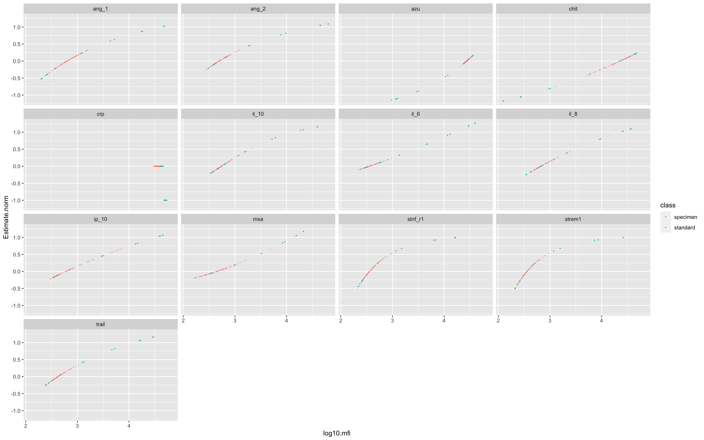
The pink dots show the specimens and the blue dots (and line) show the standard curve. You can see that most specimen estimates fall inside the standard curve, which is desirable and which is essentially forced by our choice of dose-response model. Note also that CRP didn’t work on this plate. This is not unexpected. It was quite an ask to get CRP on to this multiplex as it has very high activity compared to other markers. For the most part these all look pretty good.
16.4.4 Read in the rest of the plates
for(i in 2:length(c.files)){a<-bind_rows(a,luminex.process.data(file = c.files[i],standards.file = "data/MOSDEF_Standard_Concs.csv"))}16.4.5 Chart the results for all assays on all plates
######################################################################
# Draw charts
######################################################################
(ggplot(a,aes(log10.mfi,Estimate,color=class))+geom_point(size=0.1)+facet_wrap(.~assay,scales = "free"))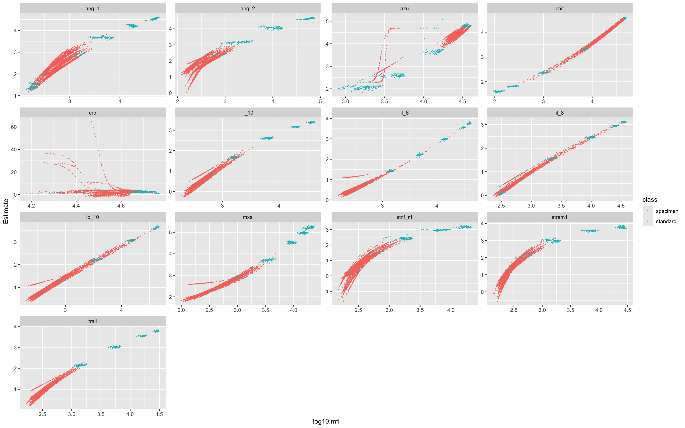
try(dir.create("output"))#make an output folder to save hard copies
a$plate<-str_remove(string = a$plate,"data/luminex_files/")
a$plate<-str_remove(string = a$plate,".csv")As you can see, the CRP assay didn’t really work at all, so we’ll remove it.
a<-a %>% filter(assay!="crp",
class=="specimen") %>%
distinct()You can also see that some plates behaved unusually in the Azu assay. We’ll investigate those further next.
16.5 Visualisation
16.5.1 Define a function that will draw a chart for each assay, showing effects of normalisation on a plate-by-plate basis
This type of chart is useful for identifying outlier plates which may have behaved differently. You should note that if you’ve got all of your clinical cases on one plate, but all your control cases on another, then you’d expect to see outliers because of this.
plot.assay<-function(test.assay){
ggplot(filter(a,assay==test.assay),aes(plate,Estimate))+
geom_boxplot(size=0.3)+
ggtitle(test.assay)+
facet_wrap(.~class,scales = "free")+
theme(legend.position = "none",axis.text.x = element_text(angle = 90,size=3))
}16.5.2 Apply the function to all assays
Notably, the standards were odd in these plates, which suggests that there may be some issues that could be solved by running the plates again.
16.5.2.1 IL-8
plot.assay("il_8")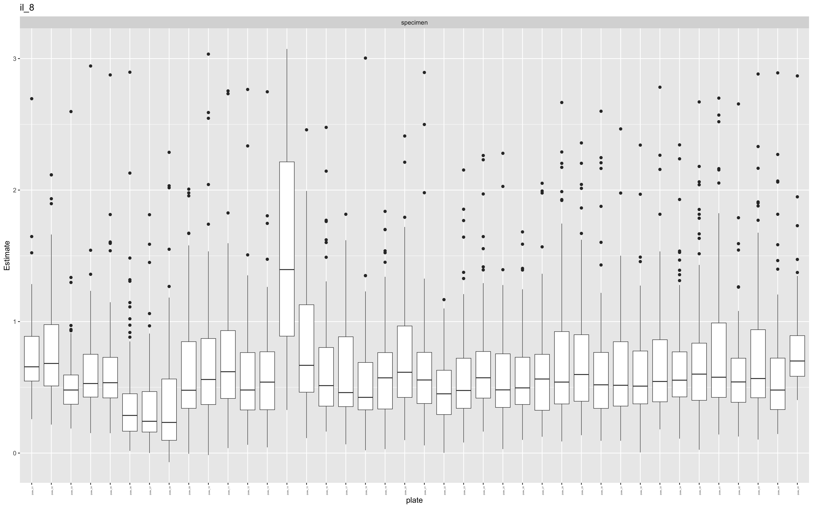
16.5.2.2 Azu
plot.assay("azu");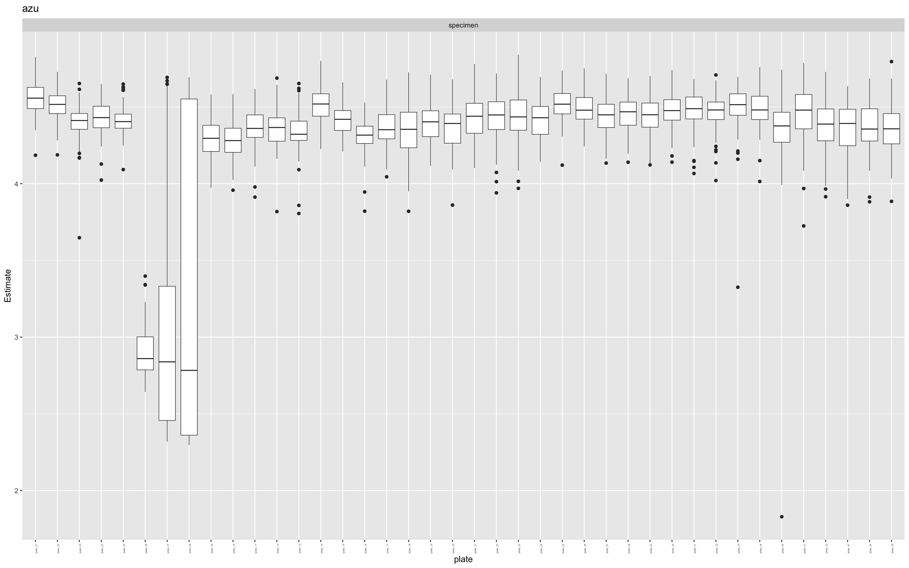
16.5.2.3 STNF-R1
plot.assay("stnf_r1")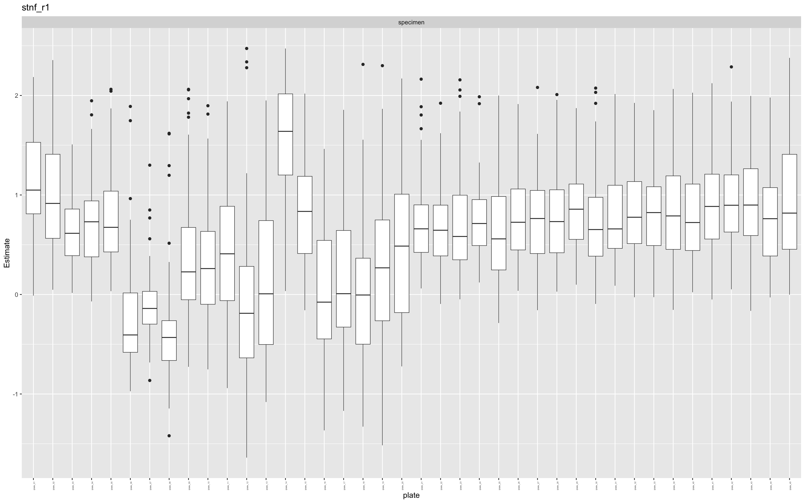
16.5.2.4 IL-6
plot.assay("il_6")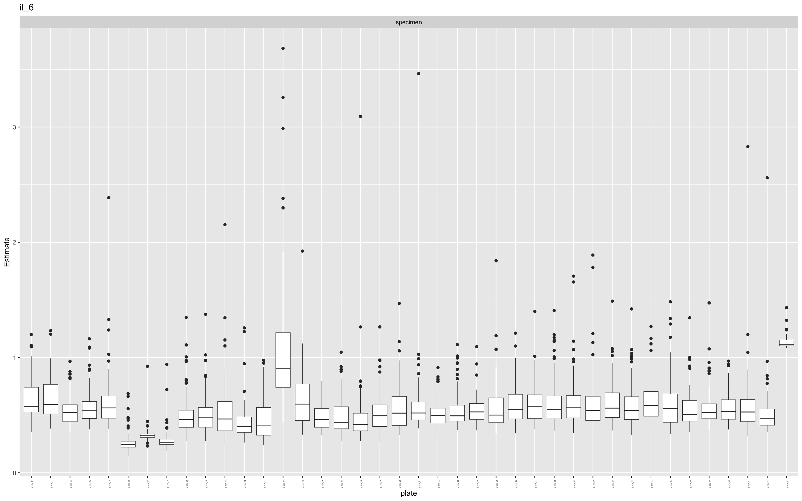
16.5.2.5 ANG-2
plot.assay("ang_2")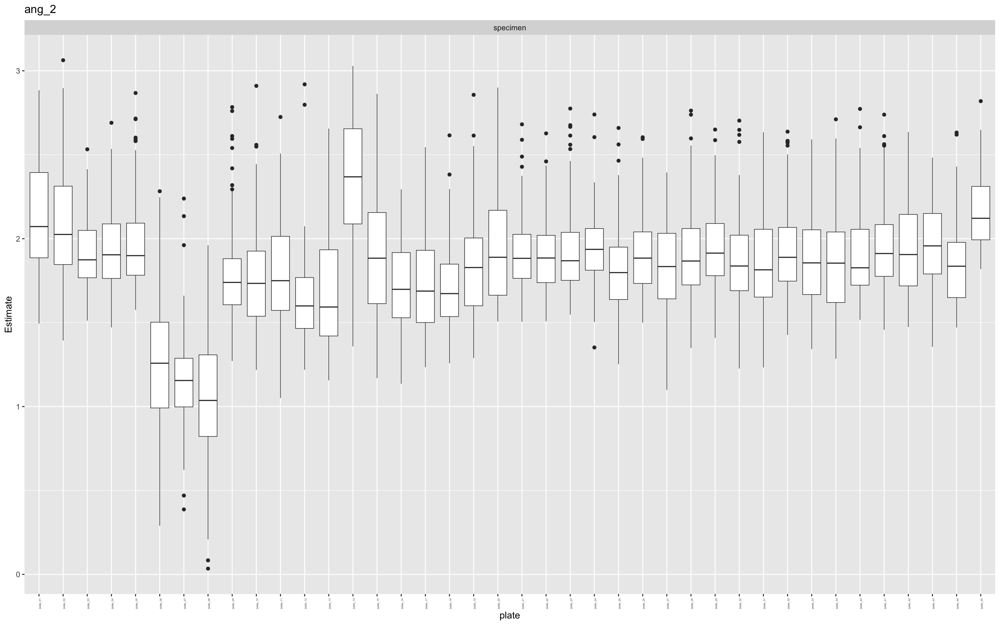
16.5.2.6 ANG-1
plot.assay("ang_1")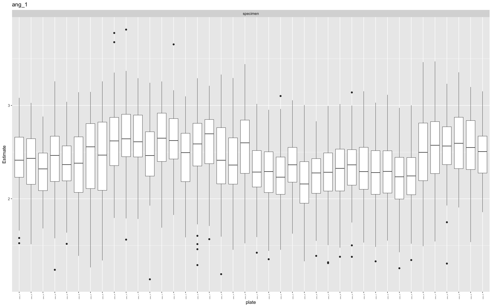
16.5.2.7 TRAIL
plot.assay("trail")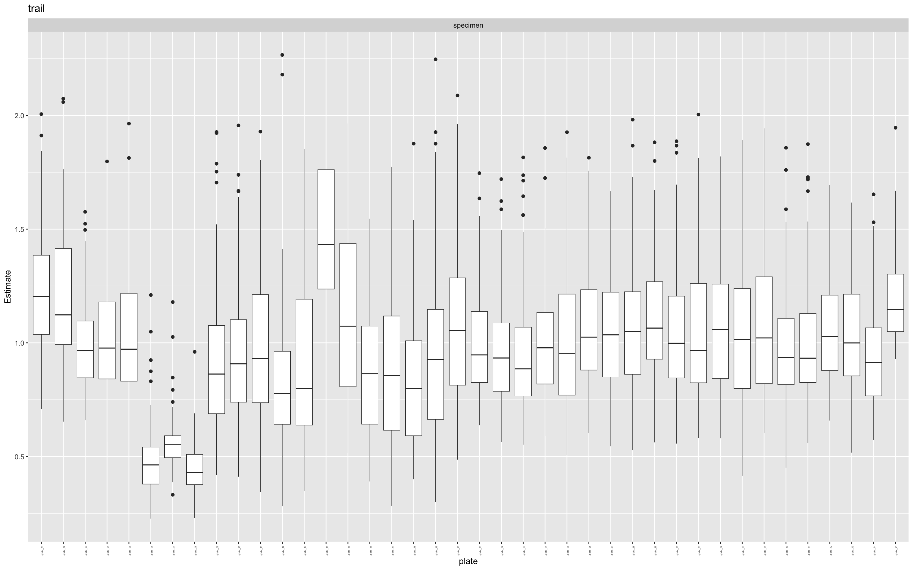
16.5.2.8 IL-10
plot.assay("il_10")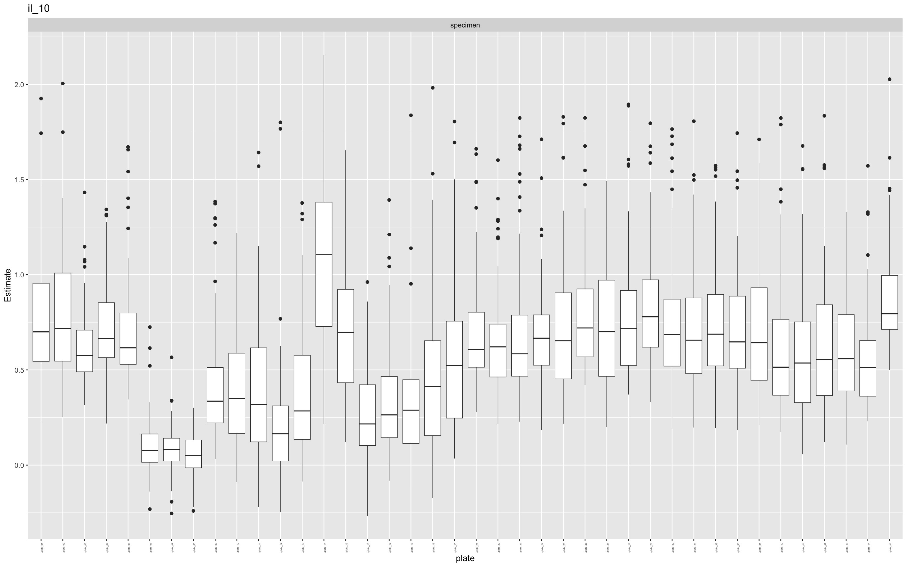
16.5.2.9 STREM-1
plot.assay("strem1")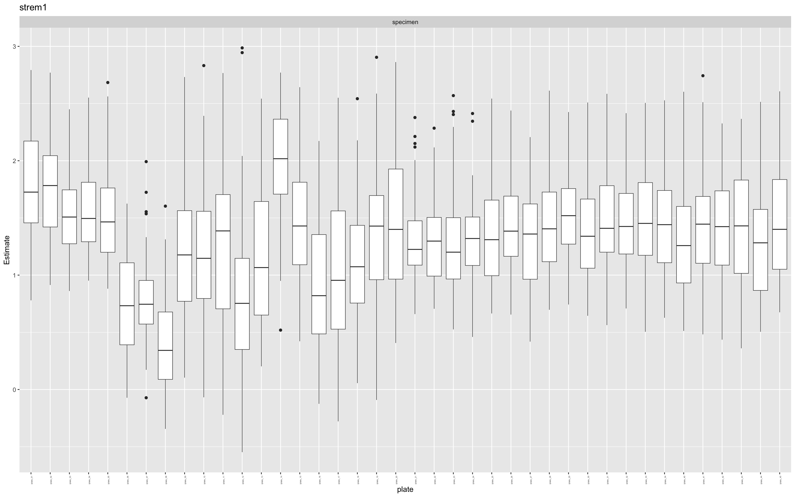
16.5.2.10 IP-10
plot.assay("ip_10")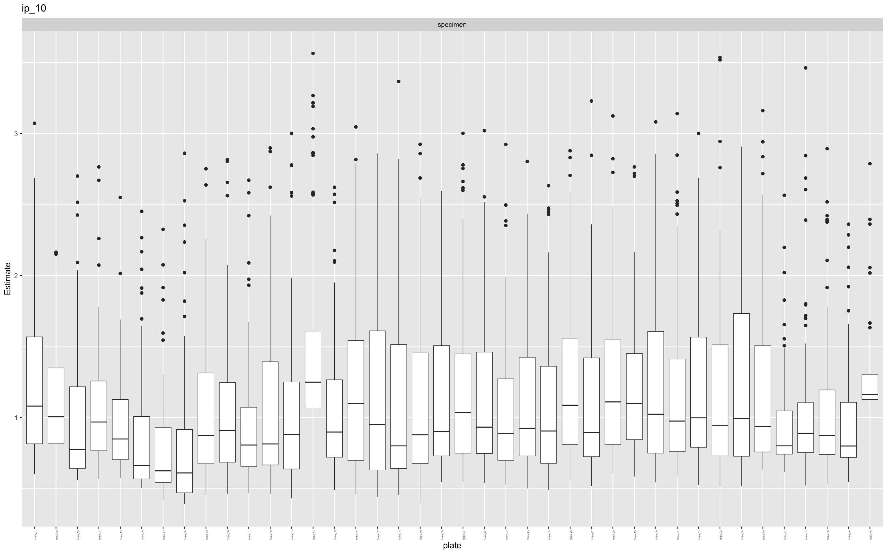
16.5.2.11 Mxa
plot.assay("mxa")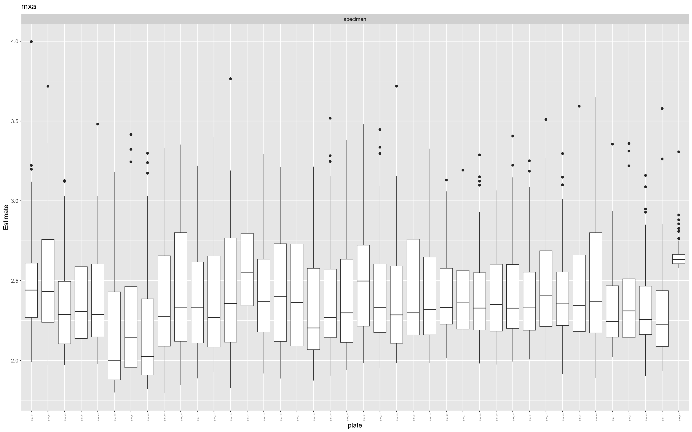
16.5.2.12 Chit
plot.assay("chit")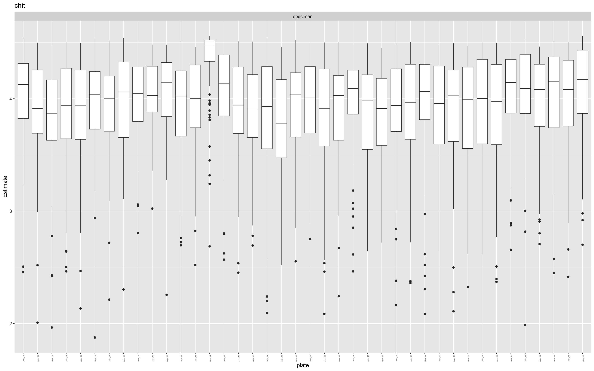
16.6 Clinical data
The data imported from the Luminex files do not include clinical parameters that will be used in an analysis. The ID numbers do contain some information though. Here, the last characters of the sample variable tell us whether the data relate to a specimen taken at day 0 (FP) or day 28 (CFP). We’ll make a new variable which captures this, then remove those characters from the sample variable.
a<- a %>%
mutate(
timepoint = case_when(
str_detect(sample, pattern = "CFP") ~ "day28",
str_detect(sample, pattern = "FP") ~ "day0"
),
timepoint = factor(timepoint),
sample = str_remove(sample,"CFP|FP")
)The clinical data are provided in the file 0000_clinical_data.csv and include the following variables
- sample
- The sample ID now stored in the Luminex derived df
- inpatient_outpatient
- This is a factor indicating whether the person was
- A person with a clinical case of fever, who was treated as an outpatient
- A person with a clinical case of fever, who was treated as an inpatient
- A person without fever, living in the same communities as the cases
- A person with a clinical case of fever, who was treated as an outpatient
- This is a factor indicating whether the person was
- outcome
- good
- The person recovered by day 28
- bad
- The person was still ill, or was dead at day 28
- control
- Community Control, no fever
- ltfu
- Lost to follow-up
- good
- fever_days
- The number of days that the person was symptomatic prior to triage at day 0
- time_death
- The days elapsed between day 0 and death
- time_death_plus_fever_days
The days elapsed between symptom onset and death
- For cases where symptom onset was unknown, this was set to the modal value (2)
clinical.and.control.data <- read_csv("data/0000_clinical_data.csv")
kable(clinical.and.control.data[1:100,])| sample | inpatient_outpatient | cf_5_inpatient_outcome |
|---|---|---|
| ZW70734 | inpatient | discharged |
| LA12100 | inpatient | discharged |
| LA12397 | inpatient | discharged |
| MW24057 | inpatient | discharged |
| MZ42156 | inpatient | died |
| LA12188 | inpatient | discharged |
| LA12126 | inpatient | discharged |
| LA12329 | inpatient | discharged |
| LA12568 | inpatient | discharged_pallative |
| MZ42199 | inpatient | discharged |
| LA11188 | inpatient | discharged |
| MZ42209 | inpatient | died |
| LA12408 | inpatient | discharged |
| MW29098 | inpatient | discharged |
| LA12567 | inpatient | discharged |
| ZW56286 | inpatient | other_health_facility |
| LA12229 | inpatient | discharged |
| LA12419 | inpatient | died |
| LA12414 | inpatient | discharged |
| LA12162 | inpatient | discharged |
| MW22859 | inpatient | died |
| ZW57902 | inpatient | discharged |
| ZW70834 | inpatient | discharged |
| LA12286 | inpatient | discharged |
| ZW57757 | inpatient | discharged |
| LA12050 | inpatient | discharged |
| LA12472 | inpatient | discharged |
| MZ42136 | inpatient | discharged |
| ZW58240 | inpatient | discharged |
| ZW60132 | inpatient | discharged |
| ZW70641 | inpatient | discharged |
| MW22330 | inpatient | discharged |
| MZ42278 | inpatient | discharged |
| LA12158 | inpatient | discharged |
| LA12163 | inpatient | discharged |
| MZ42501 | inpatient | discharged |
| LA12309 | inpatient | discharged |
| LA12411 | inpatient | discharged |
| MZ42099 | inpatient | discharged_pallative |
| LA12026 | inpatient | discharged |
| LA12292 | inpatient | discharged |
| ZW50085 | inpatient | discharged |
| ZW60011 | inpatient | discharged |
| LA12306 | inpatient | discharged |
| LA12589 | inpatient | discharged |
| LA12348 | inpatient | discharged |
| ZW70731 | inpatient | discharged |
| MW25505 | inpatient | discharged |
| MW29383 | inpatient | discharged |
| LA12203 | inpatient | discharged |
| ZW60254 | inpatient | discharged |
| MZ42145 | inpatient | died |
| ZW70464 | inpatient | discharged |
| LA12241 | inpatient | discharged |
| MZ42098 | inpatient | discharged |
| ZW60253 | inpatient | discharged |
| LA12255 | inpatient | discharged |
| LA11285 | inpatient | discharged |
| LA12118 | inpatient | other_health_facility |
| LA12339 | inpatient | discharged |
| MZ42168 | inpatient | discharged |
| LA12370 | inpatient | discharged |
| MW20937 | inpatient | died |
| LA12318 | inpatient | discharged |
| ZW51134 | inpatient | other_health_facility |
| ZW60255 | inpatient | discharged |
| LA12134 | inpatient | other_health_facility |
| ZW58499 | inpatient | discharged |
| ZW52581 | inpatient | discharged |
| ZW58900 | inpatient | discharged |
| LA12001 | inpatient | discharged |
| ZW60605 | inpatient | discharged |
| MZ42151 | inpatient | discharged |
| MZ42566 | inpatient | died |
| LA12183 | inpatient | discharged |
| MZ42240 | inpatient | other_health_facility |
| LA12540 | inpatient | discharged |
| LA12392 | inpatient | discharged |
| MZ42017 | inpatient | discharged |
| LA12448 | inpatient | discharged |
| MZ42060 | inpatient | discharged |
| MZ42175 | inpatient | died |
| LA12043 | inpatient | discharged_pallative |
| MW28841 | inpatient | discharged |
| ZW70859 | inpatient | discharged |
| ZW51034 | inpatient | died |
| LA12357 | inpatient | discharged |
| LA11354 | inpatient | discharged_pallative |
| LA12313 | inpatient | discharged |
| LA12434 | inpatient | discharged_pallative |
| LA12289 | inpatient | discharged |
| LA12258 | inpatient | discharged |
| MW28366 | inpatient | discharged |
| LA12494 | inpatient | discharged |
| LA12249 | inpatient | discharged |
| MZ42474 | inpatient | other_health_facility |
| LA12310 | inpatient | discharged |
| LA12573 | inpatient | discharged |
| LA12456 | inpatient | died |
| LA12359 | inpatient | discharged |
The next step is to merge the clinical data with the luminex data and then to clarify that day_0 controls are separate from day 0 cases
full_data<- left_join(a,clinical.and.control.data,by="sample")
full_data$timepoint<-as.character(full_data$timepoint)
full_data$timepoint[which(as.character(full_data$inpatient_outpatient)=="control")] <- "control"
full_data$timepoint<-as.factor(full_data$timepoint)
kable(full_data[1:100,])| sample | test.id | assay | mfi | bead.count | conc | class | bg | tp | mn | log10.mfi | Estimate | Estimate.norm | plate | timepoint | inpatient_outpatient | cf_5_inpatient_outcome |
|---|---|---|---|---|---|---|---|---|---|---|---|---|---|---|---|---|
| LA11033 | SHGKD1852U | il_8 | 412.0 | 135 | NA | specimen | 311.5 | 37005.0 | 346 | 2.614897 | 0.2633586 | -0.1791349 | /plate_01 | day0 | NA | NA |
| LA11039 | ILAID4151N | il_8 | 555.0 | 161 | NA | specimen | 311.5 | 37005.0 | 346 | 2.744293 | 0.5170225 | -0.0661484 | /plate_01 | day0 | NA | NA |
| LA11037 | VGHJM4359F | il_8 | 434.5 | 188 | NA | specimen | 311.5 | 37005.0 | 346 | 2.637990 | 0.3093415 | -0.1586533 | /plate_01 | day28 | NA | NA |
| LA11039 | KOANM9309M | il_8 | 604.5 | 136 | NA | specimen | 311.5 | 37005.0 | 346 | 2.781396 | 0.5879573 | -0.0345527 | /plate_01 | day28 | NA | NA |
| LA11037 | EGPPE6968D | il_8 | 550.0 | 163 | NA | specimen | 311.5 | 37005.0 | 346 | 2.740363 | 0.5094613 | -0.0695163 | /plate_01 | day0 | NA | NA |
| LA11036 | LWPQA3913Y | il_8 | 1066.5 | 126 | NA | specimen | 311.5 | 37005.0 | 346 | 3.027961 | 1.0388960 | 0.1663035 | /plate_01 | day28 | NA | NA |
| LA11036 | WIUSH3317X | il_8 | 1147.5 | 174 | NA | specimen | 311.5 | 37005.0 | 346 | 3.059753 | 1.0944655 | 0.1910552 | /plate_01 | day0 | NA | NA |
| LA11034 | HASCA4592S | il_8 | 569.0 | 157 | NA | specimen | 311.5 | 37005.0 | 346 | 2.755112 | 0.5377902 | -0.0568981 | /plate_01 | day28 | NA | NA |
| LA11040 | STYAL4876A | il_8 | 504.5 | 106 | NA | specimen | 311.5 | 37005.0 | 346 | 2.702861 | 0.4368614 | -0.1018536 | /plate_01 | day0 | NA | NA |
| LA11034 | HLPGU1397F | il_8 | 642.5 | 126 | NA | specimen | 311.5 | 37005.0 | 346 | 2.807873 | 0.6380836 | -0.0122256 | /plate_01 | day0 | NA | NA |
| LA11033 | UPJRU9129S | il_8 | 441.0 | 128 | NA | specimen | 311.5 | 37005.0 | 346 | 2.644439 | 0.3221276 | -0.1529581 | /plate_01 | day28 | NA | NA |
| LA11040 | JVOSI1587O | il_8 | 430.0 | 139 | NA | specimen | 311.5 | 37005.0 | 346 | 2.633469 | 0.3003627 | -0.1626526 | /plate_01 | day28 | NA | NA |
| LA12027 | FCIFG0648D | il_8 | 643.5 | 138 | NA | specimen | 311.5 | 37005.0 | 346 | 2.808549 | 0.6393570 | -0.0116584 | /plate_01 | day28 | inpatient | discharged |
| LA12027 | HJYDE3625F | il_8 | 816.0 | 139 | NA | specimen | 311.5 | 37005.0 | 346 | 2.911690 | 0.8306722 | 0.0735569 | /plate_01 | day0 | inpatient | discharged |
| LA12026 | VRHCL9504V | il_8 | 652.0 | 153 | NA | specimen | 311.5 | 37005.0 | 346 | 2.814248 | 0.6500906 | -0.0068775 | /plate_01 | day28 | inpatient | discharged |
| LA12026 | VAYHW1782L | il_8 | 1457.0 | 153 | NA | specimen | 311.5 | 37005.0 | 346 | 3.163460 | 1.2717008 | 0.2699990 | /plate_01 | day0 | inpatient | discharged |
| LA12024 | NPLGF7754K | il_8 | 593.0 | 151 | NA | specimen | 311.5 | 37005.0 | 346 | 2.773055 | 0.5720799 | -0.0416249 | /plate_01 | day28 | inpatient | discharged |
| LA12022 | JQKTV5449U | il_8 | 640.0 | 126 | NA | specimen | 311.5 | 37005.0 | 346 | 2.806180 | 0.6348904 | -0.0136479 | /plate_01 | day28 | inpatient | discharged |
| LA12024 | FOLVC5757H | il_8 | 654.0 | 164 | NA | specimen | 311.5 | 37005.0 | 346 | 2.815578 | 0.6525930 | -0.0057628 | /plate_01 | day0 | inpatient | discharged |
| LA12028 | YDITP1935G | il_8 | 713.5 | 152 | NA | specimen | 311.5 | 37005.0 | 346 | 2.853394 | 0.7233048 | 0.0257335 | /plate_01 | day0 | inpatient | discharged |
| LA12021 | QBWQM4347F | il_8 | 625.5 | 134 | NA | specimen | 311.5 | 37005.0 | 346 | 2.796227 | 0.6160862 | -0.0220236 | /plate_01 | day28 | inpatient | discharged |
| LA12028 | ZZIZF0455C | il_8 | 520.5 | 160 | NA | specimen | 311.5 | 37005.0 | 346 | 2.716421 | 0.4632064 | -0.0901191 | /plate_01 | day28 | inpatient | discharged |
| LA12022 | WTCZZ6985E | il_8 | 1051.0 | 125 | NA | specimen | 311.5 | 37005.0 | 346 | 3.021603 | 1.0277124 | 0.1613222 | /plate_01 | day0 | inpatient | discharged |
| LA12021 | OIXZA0659A | il_8 | 501.0 | 159 | NA | specimen | 311.5 | 37005.0 | 346 | 2.699838 | 0.4309725 | -0.1044766 | /plate_01 | day0 | inpatient | discharged |
| LA12023 | TUCFK1156H | il_8 | 678.0 | 127 | NA | specimen | 311.5 | 37005.0 | 346 | 2.831230 | 0.6819618 | 0.0073186 | /plate_01 | day0 | inpatient | discharged |
| LA12034 | JFNKQ9365E | il_8 | 916.0 | 111 | NA | specimen | 311.5 | 37005.0 | 346 | 2.961895 | 0.9215474 | 0.1140343 | /plate_01 | day0 | inpatient | other_health_facility |
| LA12031 | KKTBR9167G | il_8 | 672.0 | 149 | NA | specimen | 311.5 | 37005.0 | 346 | 2.827369 | 0.6747316 | 0.0040981 | /plate_01 | day0 | inpatient | discharged |
| LA12030 | ZLHKQ3056W | il_8 | 1376.5 | 134 | NA | specimen | 311.5 | 37005.0 | 346 | 3.138776 | 1.2300742 | 0.2514578 | /plate_01 | day0 | inpatient | discharged |
| LA12032 | OPEWU1360J | il_8 | 2434.0 | 153 | NA | specimen | 311.5 | 37005.0 | 346 | 3.386321 | 1.6320710 | 0.4305145 | /plate_01 | day0 | inpatient | other_health_facility |
| LA12033 | CUVAC1977G | il_8 | 1171.5 | 176 | NA | specimen | 311.5 | 37005.0 | 346 | 3.068742 | 1.1100728 | 0.1980070 | /plate_01 | day0 | inpatient | discharged_pallative |
| LA12025 | QYMHD2998X | il_8 | 1262.0 | 138 | NA | specimen | 311.5 | 37005.0 | 346 | 3.101059 | 1.1657965 | 0.2228273 | /plate_01 | day0 | inpatient | discharged_pallative |
| LA12029 | VHKUC4047G | il_8 | 431.5 | 162 | NA | specimen | 311.5 | 37005.0 | 346 | 2.634981 | 0.3033674 | -0.1613143 | /plate_01 | day0 | inpatient | discharged |
| LA19076 | VFZHQ3422A | il_8 | 595.0 | 110 | NA | specimen | 311.5 | 37005.0 | 346 | 2.774517 | 0.5748661 | -0.0403838 | /plate_01 | control | control | Control |
| LA19075 | KHUXL8867Y | il_8 | 577.0 | 178 | NA | specimen | 311.5 | 37005.0 | 346 | 2.761176 | 0.5493993 | -0.0517272 | /plate_01 | control | control | Control |
| LA19074 | SQSNR6198H | il_8 | 809.0 | 156 | NA | specimen | 311.5 | 37005.0 | 346 | 2.907948 | 0.8238407 | 0.0705140 | /plate_01 | control | control | Control |
| LA19073 | SSWIM3847X | il_8 | 694.0 | 129 | NA | specimen | 311.5 | 37005.0 | 346 | 2.841359 | 0.7008926 | 0.0157507 | /plate_01 | control | control | Control |
| LA19072 | FOIZY7136I | il_8 | 700.0 | 157 | NA | specimen | 311.5 | 37005.0 | 346 | 2.845098 | 0.7078641 | 0.0188559 | /plate_01 | control | control | Control |
| LA19071 | WGJOZ6938A | il_8 | 1203.0 | 172 | NA | specimen | 311.5 | 37005.0 | 346 | 3.080266 | 1.1300111 | 0.2068879 | /plate_01 | control | control | Control |
| LA19070 | FCNHC5405J | il_8 | 1019.0 | 156 | NA | specimen | 311.5 | 37005.0 | 346 | 3.008174 | 1.0040155 | 0.1507671 | /plate_01 | control | control | Control |
| LA19069 | BJNDC1787J | il_8 | 680.5 | 176 | NA | specimen | 311.5 | 37005.0 | 346 | 2.832828 | 0.6849530 | 0.0086509 | /plate_01 | control | control | Control |
| LA19068 | SOAWG2729N | il_8 | 944.0 | 123 | NA | specimen | 311.5 | 37005.0 | 346 | 2.974972 | 0.9449757 | 0.1244697 | /plate_01 | control | control | Control |
| LA19067 | YKYZG4464G | il_8 | 559.0 | 123 | NA | specimen | 311.5 | 37005.0 | 346 | 2.747412 | 0.5230161 | -0.0634787 | /plate_01 | control | control | Control |
| LA19066 | ZABYK9626H | il_8 | 615.0 | 121 | NA | specimen | 311.5 | 37005.0 | 346 | 2.788875 | 0.6021579 | -0.0282275 | /plate_01 | control | control | Control |
| LA19065 | FCIID4951Q | il_8 | 719.0 | 144 | NA | specimen | 311.5 | 37005.0 | 346 | 2.856729 | 0.7295005 | 0.0284932 | /plate_01 | control | control | Control |
| LA19064 | FFARN9962A | il_8 | 743.0 | 107 | NA | specimen | 311.5 | 37005.0 | 346 | 2.870989 | 0.7559196 | 0.0402607 | /plate_01 | control | control | Control |
| LA19063 | YSPMQ7157A | il_8 | 547.0 | 164 | NA | specimen | 311.5 | 37005.0 | 346 | 2.737987 | 0.5048872 | -0.0715537 | /plate_01 | control | control | Control |
| LA19062 | XKMHL2286R | il_8 | 880.5 | 156 | NA | specimen | 311.5 | 37005.0 | 346 | 2.944729 | 0.8906408 | 0.1002680 | /plate_01 | control | control | Control |
| LA19061 | ZJUTH0630E | il_8 | 713.5 | 172 | NA | specimen | 311.5 | 37005.0 | 346 | 2.853394 | 0.7233048 | 0.0257335 | /plate_01 | control | control | Control |
| LA19060 | PQNTB0480Q | il_8 | 744.0 | 105 | NA | specimen | 311.5 | 37005.0 | 346 | 2.871573 | 0.7569993 | 0.0407416 | /plate_01 | control | control | Control |
| LA19059 | VFWTH5193U | il_8 | 587.0 | 101 | NA | specimen | 311.5 | 37005.0 | 346 | 2.768638 | 0.5636568 | -0.0453766 | /plate_01 | control | control | Control |
| LA19058 | ZKQKJ4765K | il_8 | 682.5 | 108 | NA | specimen | 311.5 | 37005.0 | 346 | 2.834103 | 0.6873370 | 0.0097128 | /plate_01 | control | control | Control |
| LA19057 | BJLNT2569K | il_8 | 565.0 | 149 | NA | specimen | 311.5 | 37005.0 | 346 | 2.752048 | 0.5319161 | -0.0595145 | /plate_01 | control | control | Control |
| LA19056 | WDIEJ7300D | il_8 | 617.0 | 133 | NA | specimen | 311.5 | 37005.0 | 346 | 2.790285 | 0.6048316 | -0.0270366 | /plate_01 | control | control | Control |
| LA19055 | WBEMZ8364O | il_8 | 735.0 | 173 | NA | specimen | 311.5 | 37005.0 | 346 | 2.866287 | 0.7472224 | 0.0363868 | /plate_01 | control | control | Control |
| LA19054 | GQLIG2522J | il_8 | 728.0 | 153 | NA | specimen | 311.5 | 37005.0 | 346 | 2.862131 | 0.7395236 | 0.0329576 | /plate_01 | control | control | Control |
| LA14029 | CEOMW0540K | il_8 | 14689.0 | 167 | NA | specimen | 311.5 | 37005.0 | 346 | 4.166992 | 2.6923326 | 0.9027743 | /plate_01 | day0 | inpatient | discharged |
| LA14029 | CGNQI1160J | il_8 | 562.0 | 177 | NA | specimen | 311.5 | 37005.0 | 346 | 2.749736 | 0.5274796 | -0.0614906 | /plate_01 | day28 | inpatient | discharged |
| LA14028 | UKESF7004Q | il_8 | 607.0 | 107 | NA | specimen | 311.5 | 37005.0 | 346 | 2.783189 | 0.5913637 | -0.0330355 | /plate_01 | day0 | inpatient | other_health_facility |
| LA14027 | YSQYR9458Q | il_8 | 864.0 | 143 | NA | specimen | 311.5 | 37005.0 | 346 | 2.936514 | 0.8757883 | 0.0936524 | /plate_01 | day0 | inpatient | discharged |
| LA14028 | IQWRF4475A | il_8 | 956.0 | 154 | NA | specimen | 311.5 | 37005.0 | 346 | 2.980458 | 0.9547749 | 0.1288345 | /plate_01 | day28 | inpatient | other_health_facility |
| LA14027 | HDHBH5824I | il_8 | 600.5 | 154 | NA | specimen | 311.5 | 37005.0 | 346 | 2.778513 | 0.5824739 | -0.0369952 | /plate_01 | day28 | inpatient | discharged |
| LA14026 | NIVWI2815C | il_8 | 595.5 | 170 | NA | specimen | 311.5 | 37005.0 | 346 | 2.774882 | 0.5755610 | -0.0400743 | /plate_01 | day28 | inpatient | discharged |
| LA14026 | TWRXA5018E | il_8 | 502.0 | 191 | NA | specimen | 311.5 | 37005.0 | 346 | 2.700704 | 0.4326598 | -0.1037251 | /plate_01 | day0 | inpatient | discharged |
| LA14025 | QZAQT6173F | il_8 | 496.0 | 154 | NA | specimen | 311.5 | 37005.0 | 346 | 2.695482 | 0.4224787 | -0.1082599 | /plate_01 | day28 | inpatient | discharged |
| LA14025 | KCGKZ4596G | il_8 | 476.0 | 151 | NA | specimen | 311.5 | 37005.0 | 346 | 2.677607 | 0.3875092 | -0.1238360 | /plate_01 | day0 | inpatient | discharged |
| LA14024 | QHAAS3070U | il_8 | 2032.0 | 123 | NA | specimen | 311.5 | 37005.0 | 346 | 3.307924 | 1.5084428 | 0.3754482 | /plate_01 | day0 | inpatient | discharged |
| LA14024 | UGUGS0605Z | il_8 | 861.0 | 155 | NA | specimen | 311.5 | 37005.0 | 346 | 2.935003 | 0.8730532 | 0.0924341 | /plate_01 | day28 | inpatient | discharged |
| LA13051 | LPAMF2203X | il_8 | 1110.0 | 149 | NA | specimen | 311.5 | 37005.0 | 346 | 3.045323 | 1.0693159 | 0.1798531 | /plate_01 | day0 | NA | NA |
| LA13050 | HPEUL6649T | il_8 | 1246.0 | 175 | NA | specimen | 311.5 | 37005.0 | 346 | 3.095518 | 1.1562843 | 0.2185904 | /plate_01 | day0 | NA | NA |
| LA13051 | TOWYT4920L | il_8 | 961.0 | 163 | NA | specimen | 311.5 | 37005.0 | 346 | 2.982723 | 0.9588165 | 0.1306347 | /plate_01 | day28 | NA | NA |
| LA13050 | GTKLW6867M | il_8 | 812.0 | 133 | NA | specimen | 311.5 | 37005.0 | 346 | 2.909556 | 0.8267767 | 0.0718217 | /plate_01 | day28 | NA | NA |
| LA13048 | TUFEH9339A | il_8 | 495.5 | 152 | NA | specimen | 311.5 | 37005.0 | 346 | 2.695044 | 0.4216240 | -0.1086406 | /plate_01 | day0 | NA | NA |
| LA13048 | WSATP2009K | il_8 | 512.0 | 148 | NA | specimen | 311.5 | 37005.0 | 346 | 2.709270 | 0.4493265 | -0.0963014 | /plate_01 | day28 | NA | NA |
| LA13047 | PIRTJ0833C | il_8 | 638.5 | 110 | NA | specimen | 311.5 | 37005.0 | 346 | 2.805161 | 0.6329677 | -0.0145043 | /plate_01 | day0 | NA | NA |
| LA13044 | SWXZA6598N | il_8 | 642.0 | 139 | NA | specimen | 311.5 | 37005.0 | 346 | 2.807535 | 0.6374461 | -0.0125095 | /plate_01 | day28 | NA | NA |
| LA13047 | NPDXB8563J | il_8 | 582.0 | 101 | NA | specimen | 311.5 | 37005.0 | 346 | 2.764923 | 0.5565627 | -0.0485365 | /plate_01 | day28 | NA | NA |
| LA13044 | PEVIK2267H | il_8 | 584.0 | 165 | NA | specimen | 311.5 | 37005.0 | 346 | 2.766413 | 0.5594086 | -0.0472689 | /plate_01 | day0 | NA | NA |
| LA13046 | XFJNU8182S | il_8 | 877.0 | 133 | NA | specimen | 311.5 | 37005.0 | 346 | 2.943000 | 0.8875170 | 0.0988766 | /plate_01 | day0 | NA | NA |
| LA13046 | OQKJI1993Q | il_8 | 824.0 | 165 | NA | specimen | 311.5 | 37005.0 | 346 | 2.915927 | 0.8383984 | 0.0769983 | /plate_01 | day28 | NA | NA |
| LA12587 | DYKJQ0547B | il_8 | 576.0 | 176 | NA | specimen | 311.5 | 37005.0 | 346 | 2.760422 | 0.5479581 | -0.0523691 | /plate_01 | day28 | inpatient | discharged |
| LA11033 | SHGKD1852U | stnf_r1 | 235.0 | 161 | NA | specimen | 208.0 | 16683.5 | 219 | 2.371068 | 0.2688853 | -0.3731516 | /plate_01 | day0 | NA | NA |
| LA11039 | ILAID4151N | stnf_r1 | 291.5 | 146 | NA | specimen | 208.0 | 16683.5 | 219 | 2.464639 | 0.6972570 | -0.1700360 | /plate_01 | day0 | NA | NA |
| LA11037 | VGHJM4359F | stnf_r1 | 233.0 | 141 | NA | specimen | 208.0 | 16683.5 | 219 | 2.367356 | 0.2505310 | -0.3818544 | /plate_01 | day28 | NA | NA |
| LA11039 | KOANM9309M | stnf_r1 | 332.0 | 149 | NA | specimen | 208.0 | 16683.5 | 219 | 2.521138 | 0.9260595 | -0.0615476 | /plate_01 | day28 | NA | NA |
| LA11037 | EGPPE6968D | stnf_r1 | 309.5 | 146 | NA | specimen | 208.0 | 16683.5 | 219 | 2.490661 | 0.8052771 | -0.1188175 | /plate_01 | day0 | NA | NA |
| LA11036 | LWPQA3913Y | stnf_r1 | 697.0 | 132 | NA | specimen | 208.0 | 16683.5 | 219 | 2.843233 | 1.8890279 | 0.3950509 | /plate_01 | day28 | NA | NA |
| LA11036 | WIUSH3317X | stnf_r1 | 533.0 | 174 | NA | specimen | 208.0 | 16683.5 | 219 | 2.726727 | 1.5988437 | 0.2574579 | /plate_01 | day0 | NA | NA |
| LA11034 | HASCA4592S | stnf_r1 | 325.5 | 158 | NA | specimen | 208.0 | 16683.5 | 219 | 2.512551 | 0.8926402 | -0.0773937 | /plate_01 | day28 | NA | NA |
| LA11040 | STYAL4876A | stnf_r1 | 282.0 | 128 | NA | specimen | 208.0 | 16683.5 | 219 | 2.450249 | 0.6355232 | -0.1993075 | /plate_01 | day0 | NA | NA |
| LA11034 | HLPGU1397F | stnf_r1 | 340.0 | 136 | NA | specimen | 208.0 | 16683.5 | 219 | 2.531479 | 0.9656801 | -0.0427612 | /plate_01 | day0 | NA | NA |
| LA11033 | UPJRU9129S | stnf_r1 | 258.0 | 109 | NA | specimen | 208.0 | 16683.5 | 219 | 2.411620 | 0.4624834 | -0.2813556 | /plate_01 | day28 | NA | NA |
| LA11040 | JVOSI1587O | stnf_r1 | 235.0 | 118 | NA | specimen | 208.0 | 16683.5 | 219 | 2.371068 | 0.2688853 | -0.3731516 | /plate_01 | day28 | NA | NA |
| LA12027 | FCIFG0648D | stnf_r1 | 346.0 | 143 | NA | specimen | 208.0 | 16683.5 | 219 | 2.539076 | 0.9943597 | -0.0291626 | /plate_01 | day28 | inpatient | discharged |
| LA12027 | HJYDE3625F | stnf_r1 | 519.5 | 138 | NA | specimen | 208.0 | 16683.5 | 219 | 2.715586 | 1.5680079 | 0.2428369 | /plate_01 | day0 | inpatient | discharged |
| LA12026 | VRHCL9504V | stnf_r1 | 288.0 | 187 | NA | specimen | 208.0 | 16683.5 | 219 | 2.459392 | 0.6749178 | -0.1806283 | /plate_01 | day28 | inpatient | discharged |
| LA12026 | VAYHW1782L | stnf_r1 | 977.5 | 224 | NA | specimen | 208.0 | 16683.5 | 219 | 2.990117 | 2.1829638 | 0.5344227 | /plate_01 | day0 | inpatient | discharged |
| LA12024 | NPLGF7754K | stnf_r1 | 341.5 | 152 | NA | specimen | 208.0 | 16683.5 | 219 | 2.533391 | 0.9729312 | -0.0393231 | /plate_01 | day28 | inpatient | discharged |
| LA12022 | JQKTV5449U | stnf_r1 | 378.0 | 151 | NA | specimen | 208.0 | 16683.5 | 219 | 2.577492 | 1.1339740 | 0.0370365 | /plate_01 | day28 | inpatient | discharged |
| LA12024 | FOLVC5757H | stnf_r1 | 276.5 | 170 | NA | specimen | 208.0 | 16683.5 | 219 | 2.441695 | 0.5981338 | -0.2170360 | /plate_01 | day0 | inpatient | discharged |
| LA12028 | YDITP1935G | stnf_r1 | 432.0 | 143 | NA | specimen | 208.0 | 16683.5 | 219 | 2.635484 | 1.3285197 | 0.1292818 | /plate_01 | day0 | inpatient | discharged |
16.7 Removing bad plates
It is really important to remember that a plate may have a very different distribution of values if it contains mostly controls/mostly cases/mostly day 0 specimens etc. or if something went wrong.
Let’s look at what’s on each plate
tmp<-full_data %>%
select(plate,sample,timepoint,cf_5_inpatient_outcome,inpatient_outpatient) %>%
distinct() %>%
group_by(plate,timepoint,cf_5_inpatient_outcome,inpatient_outpatient) %>%
count() %>%
mutate(type = str_c(inpatient_outpatient,timepoint,cf_5_inpatient_outcome,sep=" "))
ggplotly(ggplot(tmp,aes(plate,n))+geom_bar(stat="identity")+
facet_wrap(.~type)+
theme(legend.position = "none",axis.text.x = element_text(angle = 90,size=3))
)rm(tmp)It is clear from this chart that the unusual patterns observed for plate 14 are actually likely to relate to the fact that plate 14 had lots of specimens from people who had bad outcomes. These are likely to be the most sick. Removing this plate would be a very bad idea. Similarly there’s some plates to the right of plate 14 which have more ‘good’ outcomes than the other plates. You can see this in the boxplots above this chart, where those plates had slightly depressed levels of some of the cytokines compared to other plates.
There appears to be no reason why the Azu and a few other markers behaved differently in plates 6, 7 and 8. These may have failed for technical reasons and should be removed
full_data<- full_data %>%
filter(
plate != "plate_06",
plate != "plate_07",
plate != "plate_08"
)Write the main data frame a to an R object for future use
saveRDS(full_data,file = "data/a.RDS")16.8 Reality check
Think carefully about what you’re going to use this data for. If you’re working in a lab that has routine access to a Luminex machine, then doing fancy maths (transformations, dimensionality reduction, etc) on the variables is a viable option. If you’re really just looking for a marker that you could add to a diagnostic rapid test strip, then you need something really simple. Analysis should always be led by your ultimate purpose.
16.9 Analysis
16.9.1 Expression of markers in different clinical classes at day 0
This example shows how to assess variance in the markers according to clinical class or another variable such as patient admission types.
ggplot(filter(full_data,(timepoint=="day0" | timepoint=="control") & !is.na(inpatient_outpatient)),aes(Estimate.norm,fill=inpatient_outpatient))+
geom_density(alpha=0.3)+
theme(axis.text.x = element_text(angle = 90, vjust = 0.5, hjust=1),
legend.position = "bottom",
strip.background = element_blank(),
strip.placement='outside'
)+
facet_wrap(.~assay,
ncol = 2,
scales="free_y",
strip.position = 'left')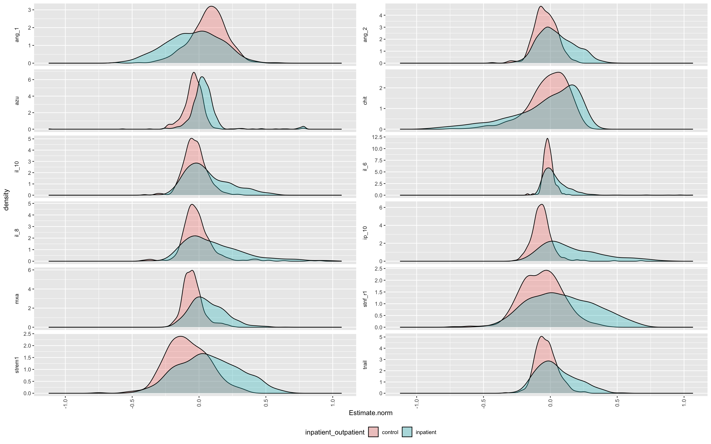
Here we can also show the results for the “IL-8” assay on its own
ggplot(filter(full_data,(timepoint=="day0" | timepoint=="control") & assay=="il_8" & !is.na(inpatient_outpatient)),aes(Estimate.norm,fill=inpatient_outpatient))+
geom_density(alpha=0.3)+
geom_boxplot()+
theme(axis.text.x = element_text(angle = 90, vjust = 0.5, hjust=1),
legend.position = c(.8, .8)
)+
ggtitle("IL-8")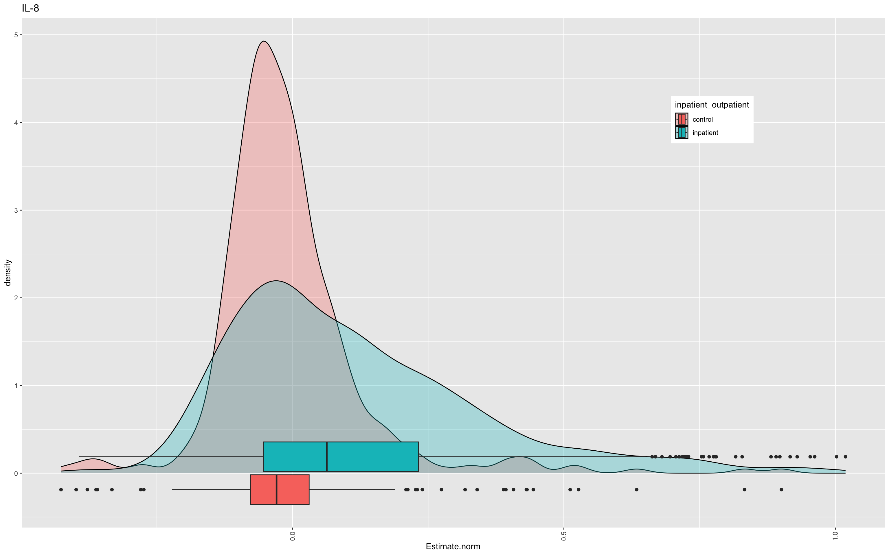
It’s pretty easy to see the difference between cases and controls. Be careful what you set out to do/prove/associate with a set of immuno-assays such as these ones because not all markers work this well. For instance, IP10 is also really good
ggplot(filter(full_data,(timepoint=="day0" | timepoint=="control") & assay=="ip_10" & !is.na(inpatient_outpatient)),aes(Estimate.norm,fill=inpatient_outpatient))+
geom_density(alpha=0.3)+
geom_boxplot()+
theme(axis.text.x = element_text(angle = 90, vjust = 0.5, hjust=1),
legend.position = c(.8, .8)
)+
ggtitle("IP-10")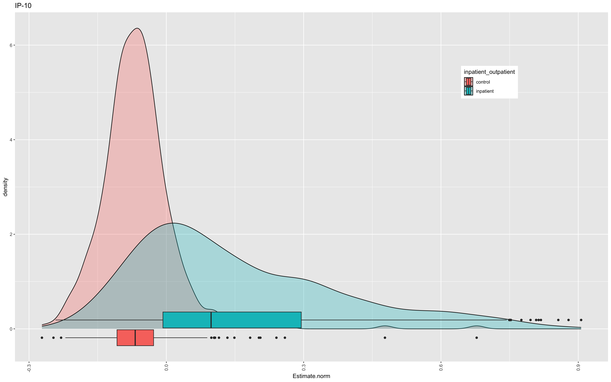
but TRAIL doesn’t look very specific with respect to severity, and also has a lot of overlap between disease cases and control specimens.
ggplot(filter(full_data,(timepoint=="day0" | timepoint=="control") & assay=="trail" & !is.na(inpatient_outpatient)),aes(Estimate.norm,fill=inpatient_outpatient))+
geom_density(alpha=0.3)+
geom_boxplot()+
theme(axis.text.x = element_text(angle = 90, vjust = 0.5, hjust=1),
legend.position = c(.8, .8)
)+
ggtitle("TRAIL")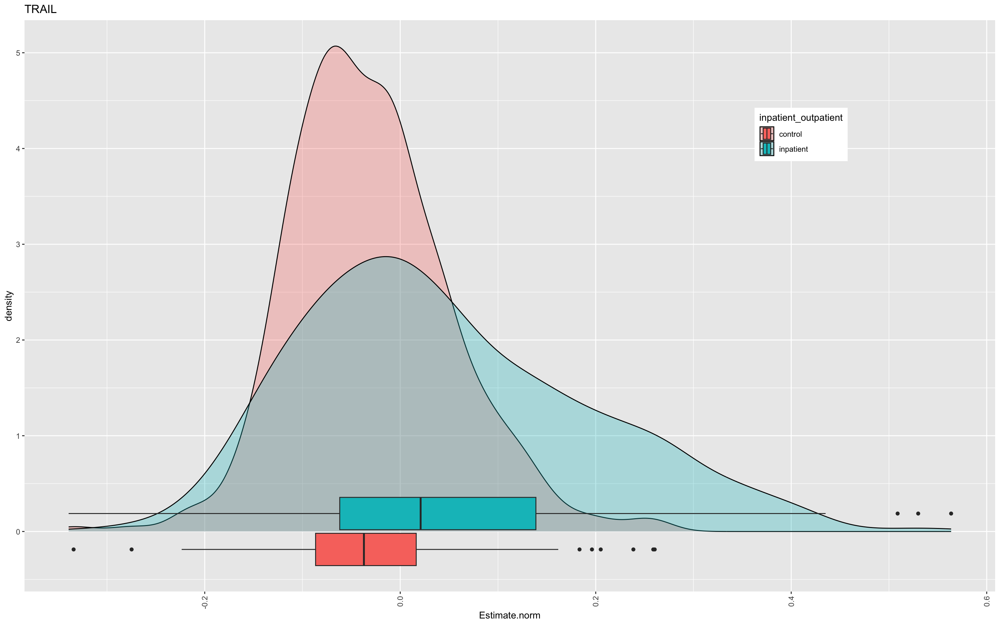
16.9.2 Expression of markers at different time points
This is similar in most respects to the analysis above. Here we make use of the fact that for some participants, there are paired specimens from day 0 and day 28. We won’t include the people with bad outcomes here because most of them were either dead (so could not provide day 28 specimen), or just did not provide a paired day 28 specimen. To address questions about how measuring increases or decreases in biomarker levels might be prognostic of disease severity/prognosis/progression, you’d need a more granular sampling frame, for instance specimens collected in a longitudinal series.
Here, we can look at how patterns of marker expression changed 28 days after the initial day 0 visit. Note the free y axes on these charts below.
ggplot(full_data,aes(Estimate.norm,fill=timepoint))+
geom_density(alpha=0.3)+
facet_wrap(assay~.,
scales = "free_y",
strip.position = 'left'
)+
theme(axis.text.x = element_text(angle = 90, vjust = 0.5, hjust=1),
legend.position = "bottom",
strip.background = element_blank(),
strip.placement='outside'
)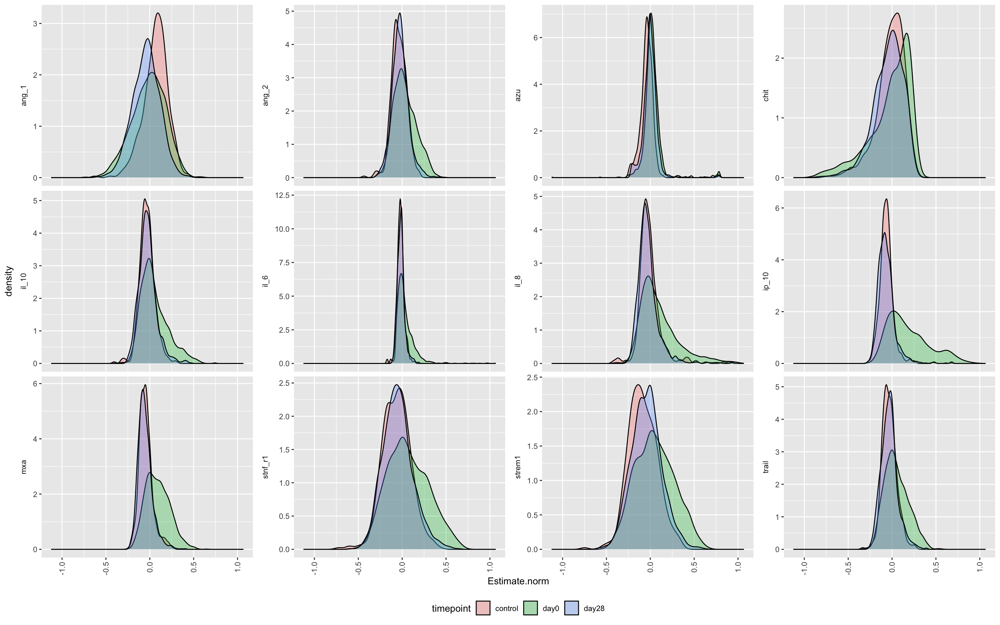
This shows pretty much what we’d expect to see in the context of a diseased state at day 0 and a resolved disease state at day 28. Most of these immune response markers were higher at day 0 than at day 28. How much we choose to read in to the individual assay responses is contextual to the specific disease/condition/infection and to different population settings. In this setting, we see a very high level of IP-10 at day 0, and a clear distinction between the day 0 and day 28 groups. These specimens were collected during an outbreak of Dengue virus, and IP-10 has well described associations with Dengue infections.
We can’t infer from the decrease in the resolved cases by day 28 that there was a concomitant increase in biomarker levels in cases which progressed to bad outcomes. We can infer that a number of these markers are indicative of a diseased state, especially if we add back the control group.
Looking at an individual marker can be useful. IL-8 clearly discriminates day 0 cases from controls and day 28 specimens
ggplot(filter(full_data,assay=="il_8"),aes(Estimate.norm,fill=timepoint))+
geom_density(alpha=0.3)+
geom_boxplot(alpha=0.3)+
facet_wrap(.~assay)+
theme(axis.text.x = element_text(angle = 90, vjust = 0.5, hjust=1),
legend.position = c(0.8,0.8),
strip.background = element_blank(),
strip.placement='outside'
)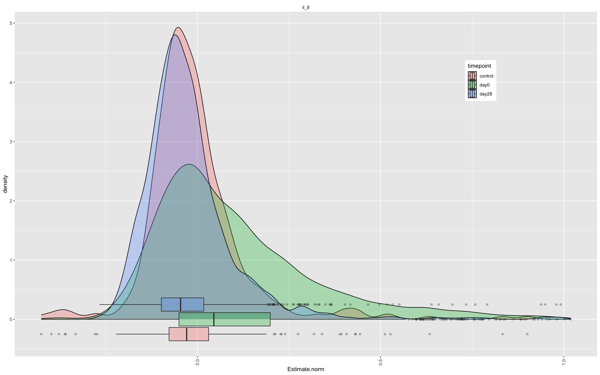
Meanwhile IP-10 is also great
ggplot(filter(full_data,assay=="ip_10"),aes(Estimate.norm,fill=timepoint))+
geom_density(alpha=0.3)+
geom_boxplot(alpha=0.3)+
facet_wrap(.~assay)+
theme(axis.text.x = element_text(angle = 90, vjust = 0.5, hjust=1),
legend.position = c(0.8,0.8),
strip.background = element_blank(),
strip.placement='outside'
)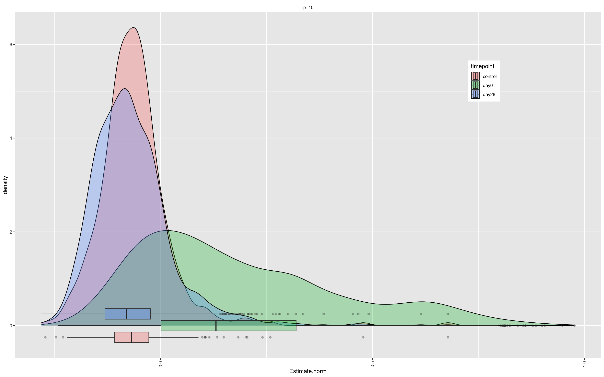
but TRAIL is less conclusive
ggplot(filter(full_data,assay=="trail"),aes(Estimate.norm,fill=timepoint))+
geom_density(alpha=0.3)+
geom_boxplot(alpha=0.3)+
facet_wrap(.~assay)+
theme(axis.text.x = element_text(angle = 90, vjust = 0.5, hjust=1),
legend.position = c(0.8,0.8),
strip.background = element_blank(),
strip.placement='outside'
)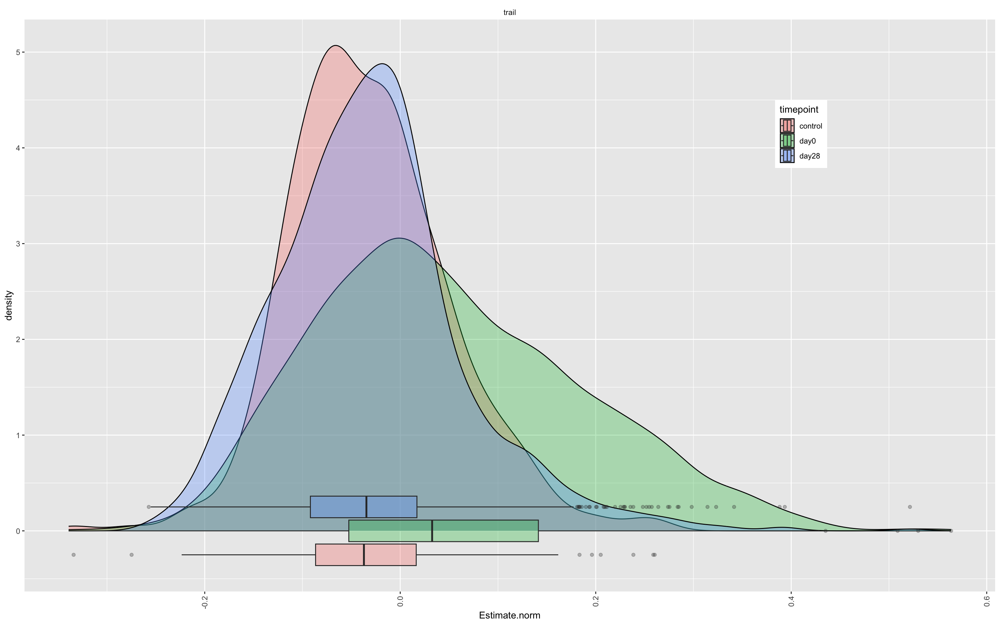
There’s very obvious differences between the diseased state and those who are recovered for some, but not all of these markers.
16.9.3 Towards a rapid prognostic test
We can take a look at day 0 and see if we can see differences in IP-10 expression between those who go on to have bad outcomes and those who don’t. Here, we are imagining that a simple rapid ‘dipstick’ type test is the ultimate goal. That limits what manipulations we can do, because tests like that are based on ‘more is worse’ type tests. While the dose response curve of a real world rapid test is not usually strictly linear, we have to find candidate markers that indicate disease/infection when they are more abundant.
day0_ip10<- filter(full_data,assay=="ip_10",timepoint=="day0",cf_5_inpatient_outcome!="other_health_facility",!is.na(cf_5_inpatient_outcome))
ggplot(day0_ip10,aes(Estimate.norm,fill=cf_5_inpatient_outcome))+
geom_density(alpha=0.3)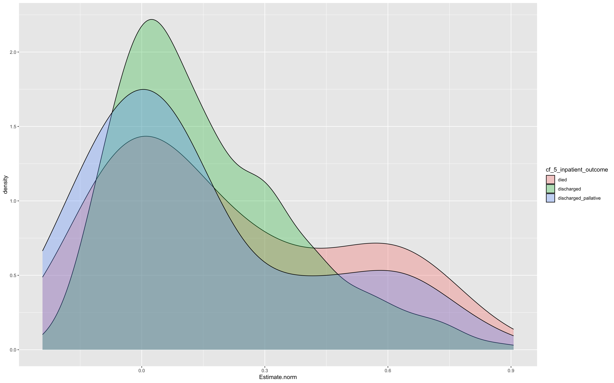
Let’s also go back to the data and look at day 0 for all assays
day_0 <- filter(full_data,timepoint=="day0",cf_5_inpatient_outcome!="other_health_facility",!is.na(cf_5_inpatient_outcome))
ggplot(day_0,aes(Estimate.norm,fill=cf_5_inpatient_outcome))+
geom_density(alpha=0.3)+
facet_wrap(assay~.,
scales="free_y",
strip.position = 'left'
)+
theme(axis.text.x = element_text(angle = 90, vjust = 0.5, hjust=1),
legend.position = "bottom",
strip.background = element_blank(),
strip.placement='outside'
)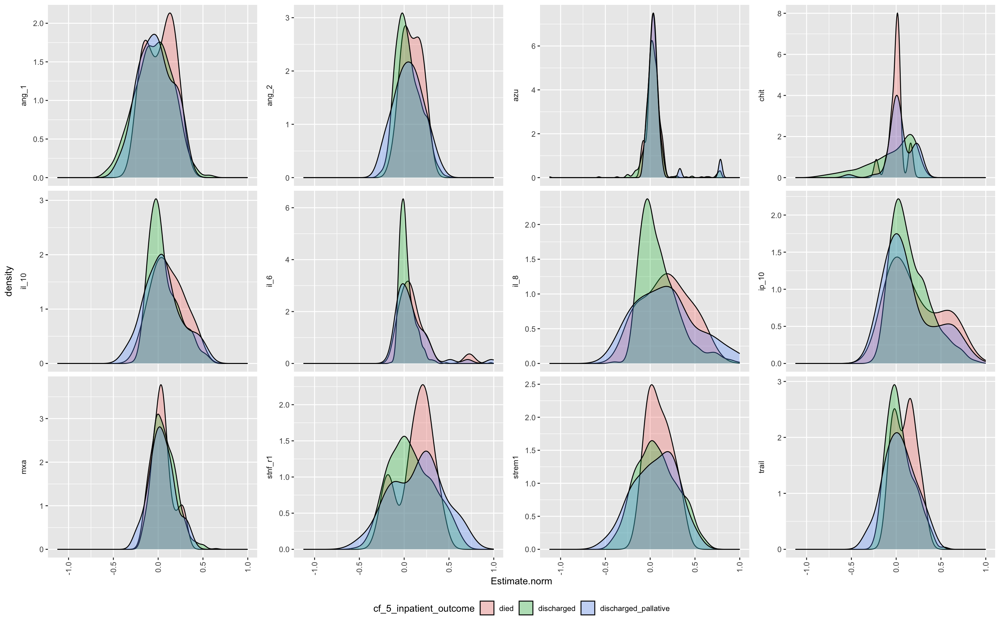
Il-8 looks interesting because a lot of the distribution of ‘bad’ values is to the right of the ‘good’ values. This suggests that more of this marker is prognostic of a bad outcome. Interestingly, whilst IP-10 was good at distinguishing the diseased/non-diseased states, it has less obvious use as a prognostic for outcomes. Meanwhile, sTNF-R1, which didn’t look very interesting before, looks like a decent prognostic.
For the following analyses, it’s a pain if any values cross zero, so to make our maths a bit easier, we’ll add a constant to the values. This has the effect of shifting everything to the right so that the minimum value is 1. Doing this also allows for log, square root and other transformations (but we won’t use those here, remembering that we are working towards a dipstick test and want linear responses. The constant is calculated by adding 1 plus the absolute value of the minimum estimated value to each value of Estimate.norm.
\(Estimate.adj = Estimate+(1+abs(min(Estimate)))\)
day0_stnfr1<- filter(full_data,
assay=="stnf_r1",
cf_5_inpatient_outcome!="other_health_facility",
!is.na(cf_5_inpatient_outcome),
timepoint=="day0"
) %>%
mutate(
Estimate.norm.adj = Estimate.norm+(1+abs(min(Estimate.norm)))
)
ggplot(day0_stnfr1,aes(Estimate.norm.adj,fill=cf_5_inpatient_outcome,alpha=0.3))+
geom_density(alpha=0.3)+
theme(axis.text.x = element_text(angle = 90, vjust = 0.5, hjust=1),
legend.position = c(0.8,0.8),
strip.background = element_blank(),
strip.placement='outside'
)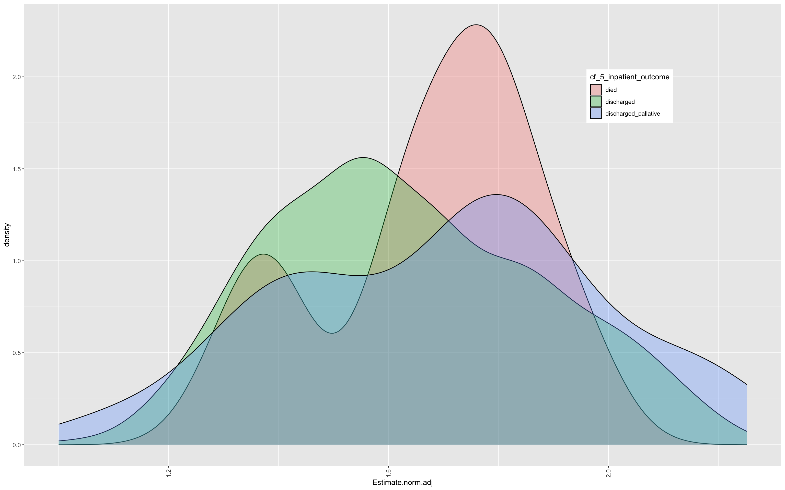
There’s better ways to look at how prognostic this type of measurement could be. Let’s try a ROC analysis, using the ROCit package. We’ll apply the rocit command to our sTNF-R1 data (day 0 only).
When using a ROC analysis, you need to be careful to ensure that your outcome variable is a binary factor with the correct reference group. Here, we want to predict who is going to have a bad outcome, so good outcomes should be the reference point.
We also need to collapse the bad outcomes in to a single class “good” (discharged) or “bad” (palliative care / dead)
day0_stnfr1 <- day0_stnfr1 %>% mutate(
outcome = as.factor(case_when(
cf_5_inpatient_outcome == "died" ~ "Bad",
cf_5_inpatient_outcome == "discharged_pallative" ~ "Bad",
cf_5_inpatient_outcome == "discharged" ~ "Good"
)),
outcome = relevel(as.factor(outcome), ref="Good")
)
summary(day0_stnfr1$outcome)Good Bad
717 66 Now that we have the correct reference group, we can run the ROC analysis.
summary(rocit(score=day0_stnfr1$Estimate.norm.adj,class=day0_stnfr1$outcome))
Method used: empirical
Number of positive(s): 66
Number of negative(s): 717
Area under curve: 0.5701 It seems to be a reasonably good (but not great) prognostic as the area under the curve (a general indicator of overall performance across a range of threshold values) is somewhat greater than 0.5 (the toss of a coin odds of getting the class right).
16.9.3.1 Function to draw ROC chart in ggplot
ROCit is a really neat package with lots of features, but doesn’t make ggplots. The following function makes a ggplot version of the ROC curves calculated with the rocit command
ROCit_plot<-function(df){
roc.curve<-tibble(
TPR=df$TPR,
FPR=df$FPR
)
p<- ggplot(data = roc.curve,aes(FPR,TPR))+
geom_line()+
geom_abline(intercept = 0,slope = 1,lty=2)+
annotate(geom = "text", x = 0.8, y = 0.05, label = str_c("AUC = ",
round(df$AUC,2),sep = "")
)
annotate(geom = "text", x = 0.8, y = 0.05, label = str_c("AUC = ",
round(df$AUC,2),sep = "")
)
return(p)
}Let’s now plot the ROC curve and visualise the overall performance of the test.
ROCit_plot(rocit(score=day0_stnfr1$Estimate.norm.adj,class=day0_stnfr1$outcome))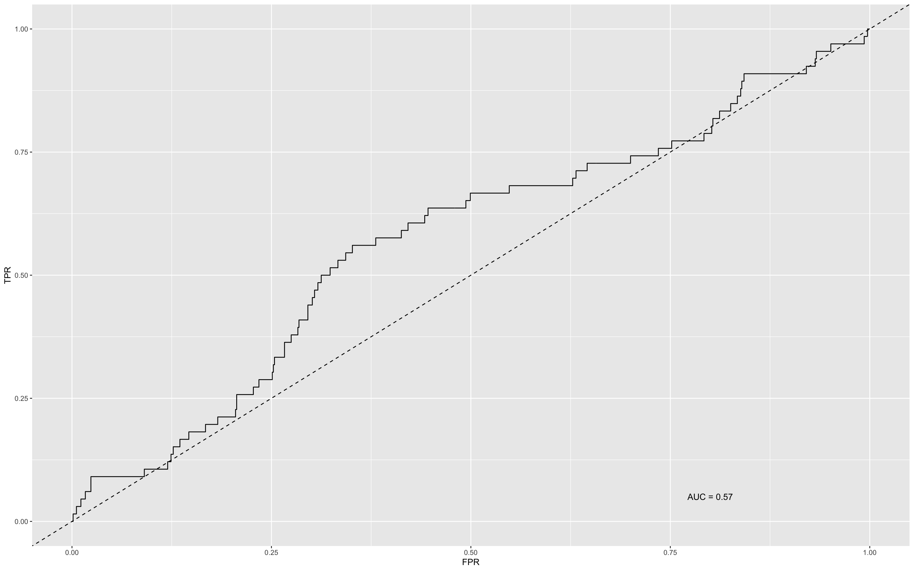
To use this data to inform the design of a rapid test, we’d need to find a cutoff value where we felt we got the best balance between sensitivity and specificity.
Let’s get some values out of the ROC analysis, using an arbitrarily chosen threshold at 1.5 units of Estimate.norm.adj
roc.stnfr1 <- rocit(score=day0_stnfr1$Estimate.norm.adj,class=day0_stnfr1$outcome)It is pretty simple to extract the sensitivity and specificity values for any threshold value.
cutoff = 1.5
str_c("Cutoff = ",cutoff)[1] "Cutoff = 1.5"str_c("Sensitivity = ",round(roc.stnfr1$TPR[max(which(roc.stnfr1$Cutoff>cutoff))],3))[1] "Sensitivity = 0.727"str_c("Specificity = ", round(1-(roc.stnfr1$FPR[max(which(roc.stnfr1$Cutoff>cutoff))]),3))[1] "Specificity = 0.331"As with basic diagnostics theory, if you increase the threshold, you get more specificity, whilst decreasing the threshold buys you more sensitivity. With different thresholds, you can see this in action
cutoff = 1.1
kable(
tibble(
Cutoff = c(1.1,1.4,1.75),
Sensitivity = c(round(roc.stnfr1$TPR[max(which(roc.stnfr1$Cutoff>1.1))],3),
round(roc.stnfr1$TPR[max(which(roc.stnfr1$Cutoff>1.4))],3),
round(roc.stnfr1$TPR[max(which(roc.stnfr1$Cutoff>1.75))],3)),
Specificity = c(round(1-(roc.stnfr1$FPR[max(which(roc.stnfr1$Cutoff>1.1))]),3),
round(1-(roc.stnfr1$FPR[max(which(roc.stnfr1$Cutoff>1.4))]),3),
round(1-(roc.stnfr1$FPR[max(which(roc.stnfr1$Cutoff>1.75))]),3))
)
)| Cutoff | Sensitivity | Specificity |
|---|---|---|
| 1.10 | 0.985 | 0.003 |
| 1.40 | 0.833 | 0.188 |
| 1.75 | 0.485 | 0.690 |
Picking a cutoff is not a trivial pursuit and a lot of care and thought should go in to this.
Your primary thought should be about how you plan to use the test. If you want a really specific test, then a high classification threshold is more appropriate. If you want a more sensitive test, then place the threshold lower down. Some situations may have reasons to avoid the extremes and to go for a threshold somewhere in the middle.
17 Example Analysis 4 : Identifying clusters via Expectation Maximisation
Sometimes you will perform some measures on specimens and will want to identify clusters, or groups of specimens in a way that is driven only by the data. A simple way to do this is to use an expectation maximisation algorithm. The assumption here is that there are two or more normal distributions that overlap, and that those groups reflect some biological or real world characteristic. We often assume that there will be one tall and narrow (the ‘normal’ group) and another low and wide (disease group). This is not always the case, but does reflect the biological reality that biomarker levels are typically low and have low variance when there’s no immune response, but when an immune response happens, expression increases, but with substantial heterogeneity that leads to the wide variance.
In this model we run an EM algorithm from the mixtools package. We’ll set a fixed seed for each modelling process, to ensure reproducibility.
set.seed(12341)
OD2<-normalmixEM(day0_stnfr1$Estimate.norm.adj)number of iterations= 500 It’s a fairly simple process to extract and plot the posterior probability distributions from the model and to chart them. We can also add a vertical line on the 95% centile of the ‘negative’ group. This is controlled by defining how many standard deviations away from the mean the line should be (1.96*OD1$sigma). 1.96 is the 95th centile, but this could be increased for higher specificity or decreased for lower specificity.
Really this analysis has a lot of analogies with ROC. They are related in lots of ways. Note that here we are making an assumption about normal distributions that may not be true. It also assumes that there’s only two distributions in there.
ggplot(day0_stnfr1, aes(x = Estimate.norm.adj)) +
geom_histogram(binwidth = 0.007,color="white",fill="grey") +
mapply(
function(mean, sd, lambda, n, binwidth) {
stat_function(
fun = function(x) {
(dnorm(x, mean = mean, sd = sd)) * n * binwidth * lambda
}
)
},
mean = OD2[["mu"]], #mean
sd = OD2[["sigma"]], #standard deviation
lambda = OD2[["lambda"]], #amplitude
n = length(day0_stnfr1$Estimate.norm.adj), #sample size
binwidth = 0.007 #binwidth used for histogram
)+
geom_vline(xintercept = OD2$mu[1]+(1.96*OD2$sigma[1]),lty=2,lwd=1)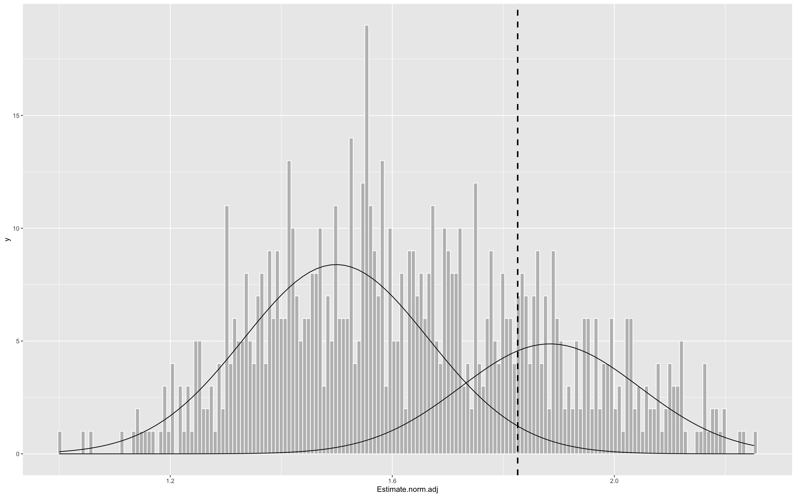
If you thought that the data were better described by four distributions, then you could simply change the assumptions of the EM model. You may also need to increase the value of maxit to allow more iterations. More complex models take longer to converge
set.seed(12341)
OD3<-normalmixEM(day0_stnfr1$Estimate.norm.adj, k=3,maxit = 5000)number of iterations= 1408 You may want to add multiple lines to complex models like this
ggplot(day0_stnfr1, aes(x = Estimate.norm.adj)) +
geom_histogram(binwidth = 0.007,color="white",fill="grey") +
mapply(
function(mean, sd, lambda, n, binwidth) {
stat_function(
fun = function(x) {
(dnorm(x, mean = mean, sd = sd)) * n * binwidth * lambda
}
)
},
mean = OD3[["mu"]], #mean
sd = OD3[["sigma"]], #standard deviation
lambda = OD3[["lambda"]], #amplitude
n = length(day0_stnfr1$Estimate.norm.adj), #sample size
binwidth = 0.007 #binwidth used for histogram
)+
geom_vline(xintercept = OD3$mu[1]+(1.96*OD3$sigma[1]),lty=2,lwd=1,col="red")+
geom_vline(xintercept = OD3$mu[2]+(1.96*OD3$sigma[2]),lty=2,lwd=1,col="blue")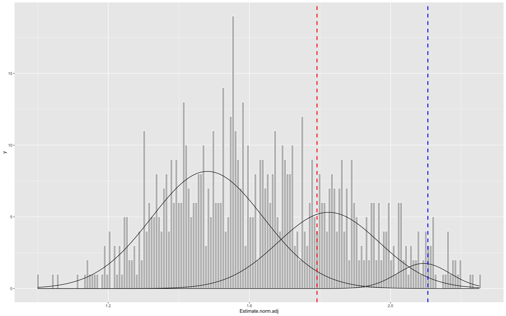
As with most modelling exercises, you may want to compare multiple models to see which describes your data best. Don’t forget that you have some assumptions being used here.
Let’s test to see if a two, three, four, or five distribution model best describes the data.
We’ve already done two and three, so let’s add four
set.seed(12343)
OD4<-normalmixEM(day0_stnfr1$Estimate.norm.adj, k=4,maxit = 6000)number of iterations= 4133 and five
set.seed(12341)
OD5<-normalmixEM(day0_stnfr1$Estimate.norm.adj, k=5,maxit = 6000)number of iterations= 3212 and six
set.seed(12341)
OD6<-normalmixEM(day0_stnfr1$Estimate.norm.adj, k=6,maxit = 10000)number of iterations= 2294 To find the best model, we simply look at the log likelihood values for each model.
mod.table <- tibble(
models = 2:6,
log.liklihood = c(OD2$loglik,OD3$loglik,OD4$loglik,OD5$loglik,OD6$loglik)
)
kable(mod.table)| models | log.liklihood |
|---|---|
| 2 | 0.5605473 |
| 3 | 4.2371302 |
| 4 | 5.0427587 |
| 5 | 6.4627512 |
| 6 | 14.1006697 |
You can see that mathematically, and taking in to account the assumptions, the best model we tested (i.e. the one with the fewest components but the largest log liklihood) is a model with six components. Note in the chart below that the three minor groups are pretty spiky and pretty small. It really looks like a two component model with some noise.
It’s hard to imagine how a 5 component model can be useful in the contenxt of developing a dipstick test. This is a good demonstration of the fact that the maths doesn’t always match the pragmatic operational use of a test. Two component models are pretty much the only viable option for most people.
ggplot(day0_stnfr1, aes(x = Estimate.norm.adj)) +
geom_histogram(binwidth = 0.007,color="white",fill="grey") +
mapply(
function(mean, sd, lambda, n, binwidth) {
stat_function(
fun = function(x) {
(dnorm(x, mean = mean, sd = sd)) * n * binwidth * lambda
}
)
},
mean = OD6[["mu"]], #mean
sd = OD6[["sigma"]], #standard deviation
lambda = OD6[["lambda"]], #amplitude
n = length(day0_stnfr1$Estimate.norm.adj), #sample size
binwidth = 0.007 #binwidth used for histogram
)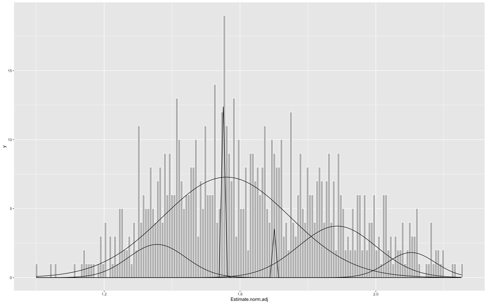
18 Example Analysis 5 : Identifying clusters via Principal Components Analysis : Timepoints
Principal Components Analysis (PCA) is a relatively simple way to identify clusters and to visualise patterns in the profile-wide expression of cytokines. In order to perform PCA in R, we need to pivot the data in to a wide format.
b<-full_data %>%
pivot_wider(id_cols = c(test.id,timepoint),names_from = assay, values_from = Estimate.norm) %>%
left_join(.,select(full_data,sample,test.id,cf_5_inpatient_outcome)) %>%
distinct()The first step in PCA is to run the prcomp command on the columns of interest. This is necessarily a complete case table with numeric values, so missing values should be imputed. The mice package is good for imputation in R, but isn’t used here as the data are mostly complete. There’s just one missing value which we’ll drop to keep this tutorial focussed.
b<-filter(b,!is.na(ang_1))
str(b)tibble [3,198 × 16] (S3: tbl_df/tbl/data.frame)
$ test.id : chr [1:3198] "SHGKD1852U" "ILAID4151N" "VGHJM4359F" "KOANM9309M" ...
$ timepoint : Factor w/ 3 levels "control","day0",..: 2 2 3 3 2 3 2 3 2 2 ...
$ il_8 : num [1:3198] -0.1791 -0.0661 -0.1587 -0.0346 -0.0695 ...
$ stnf_r1 : num [1:3198] -0.3732 -0.17 -0.3819 -0.0615 -0.1188 ...
$ il_6 : num [1:3198] -0.1027 -0.0358 -0.0839 -0.024 -0.0436 ...
$ ang_2 : num [1:3198] -0.2539 -0.1161 -0.1742 -0.0261 -0.0956 ...
$ ang_1 : num [1:3198] -0.3441 -0.1223 -0.2815 -0.0393 -0.0189 ...
$ trail : num [1:3198] -0.175 0.0304 -0.2398 -0.0887 -0.1111 ...
$ il_10 : num [1:3198] -0.1949 -0.1095 -0.1655 -0.0417 -0.0922 ...
$ strem1 : num [1:3198] -0.47555 -0.15306 -0.30833 -0.12808 0.00108 ...
$ ip_10 : num [1:3198] -0.0353 0.5973 -0.2134 -0.1718 -0.1771 ...
$ azu : num [1:3198] -0.0553 -0.0437 -0.0117 0.0234 -0.0241 ...
$ mxa : num [1:3198] -0.0995 0.0628 -0.1966 -0.098 -0.0689 ...
$ chit : num [1:3198] -0.26251 0.09555 -0.19727 0.00249 -0.11032 ...
$ sample : chr [1:3198] "LA11033" "LA11039" "LA11037" "LA11039" ...
$ cf_5_inpatient_outcome: chr [1:3198] NA NA NA NA ...This now looks fine as all the variables are in the right format, so let’s run the PCA commands on the biomarker columns, scaling the data as we go.
set.seed(888)
df.pca<-prcomp(select(b,il_8:chit),scale. = T)
df.pca.summary<-summary(df.pca)
df.pca.summaryImportance of components:
PC1 PC2 PC3 PC4 PC5 PC6 PC7
Standard deviation 2.5870 1.2280 1.1281 0.81305 0.77020 0.64417 0.55925
Proportion of Variance 0.5577 0.1257 0.1061 0.05509 0.04943 0.03458 0.02606
Cumulative Proportion 0.5577 0.6834 0.7894 0.84450 0.89393 0.92851 0.95458
PC8 PC9 PC10 PC11 PC12
Standard deviation 0.50403 0.31443 0.26796 0.25643 0.23370
Proportion of Variance 0.02117 0.00824 0.00598 0.00548 0.00455
Cumulative Proportion 0.97575 0.98399 0.98997 0.99545 1.00000Whenever you work with PCA, it is useful to start by looking at the scree plots, which show (a) the proportion of all variance in the data that are explained by each principal component and (b) the cumulative proportion of variance explained by PCs 1-n.
df.importance<-tibble(pc = 1:length(df.pca.summary$importance[1,]),
standard.deviation = df.pca.summary$importance[1,],
prop.of.variance = df.pca.summary$importance[2,],
cumulative.variance = df.pca.summary$importance[3,]
)
ggplot(df.importance,aes(pc,prop.of.variance))+geom_bar(stat="identity") +
ggplot(df.importance,aes(pc,cumulative.variance))+geom_bar(stat="identity")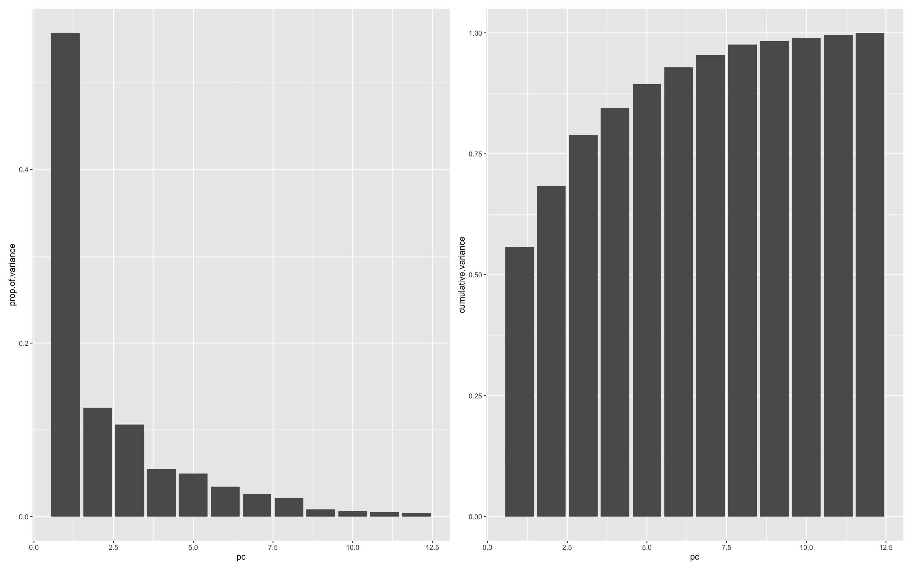
It looks like most of the variance is explained by the first principal component.
The prcomp data outputs are not compatible with ggplot, so we’ll grab the PC values and add them to our data frame. This is possible because the prcomp data is embedded in an object x which maps to the original df on a row-by-row basis. This allows merging via the bind_cols function.
b<- bind_cols(b,as.data.frame(df.pca$x))Just because the first PC explains the majority of the variance, this doesn’t mean that it is the most informative PC with respect to the differences between different clinical groups.
We can use linear regression to explore this in terms of the day of the specimen.
summary(
glm(data = b,formula = timepoint ~ PC1+PC2+PC3+PC4+PC5+PC6+PC7+PC8+PC9+PC10+PC11+PC12,family = "binomial")
)
Call:
glm(formula = timepoint ~ PC1 + PC2 + PC3 + PC4 + PC5 + PC6 +
PC7 + PC8 + PC9 + PC10 + PC11 + PC12, family = "binomial",
data = b)
Coefficients:
Estimate Std. Error z value Pr(>|z|)
(Intercept) 2.71972 0.09996 27.209 < 2e-16 ***
PC1 0.16861 0.03038 5.551 2.85e-08 ***
PC2 -1.10026 0.09917 -11.095 < 2e-16 ***
PC3 0.21725 0.06723 3.231 0.001232 **
PC4 -0.20182 0.09381 -2.151 0.031456 *
PC5 -0.57254 0.14473 -3.956 7.62e-05 ***
PC6 -0.68553 0.11987 -5.719 1.07e-08 ***
PC7 -0.07090 0.17274 -0.410 0.681469
PC8 -0.03923 0.21440 -0.183 0.854820
PC9 -0.20160 0.22024 -0.915 0.360011
PC10 0.36295 0.23847 1.522 0.128001
PC11 0.91237 0.26266 3.474 0.000514 ***
PC12 0.86924 0.29326 2.964 0.003037 **
---
Signif. codes: 0 '***' 0.001 '**' 0.01 '*' 0.05 '.' 0.1 ' ' 1
(Dispersion parameter for binomial family taken to be 1)
Null deviance: 2347.8 on 3197 degrees of freedom
Residual deviance: 1897.3 on 3185 degrees of freedom
AIC: 1923.3
Number of Fisher Scoring iterations: 7Here we can see that several PCs are associated with differences between groups in terms of the timepoint.
Biplots are used to explore PCA data visually. We’ll start by looking at PC1 and PC2. Our chart will be scaled on the x and y axes [using the aspect ratio controls within theme()]so that the dimensions of the chart don’t misrepresent the proportion of variance explained by each PC. The ellipses show the 95% confidence interval for the various groups.
ggplot(b,aes(PC1,PC2,color=timepoint,label=sample,pch=timepoint))+
geom_point(alpha=0.4,size=1) +
stat_ellipse(geom="polygon", aes(fill = timepoint), alpha = 0.2, show.legend = FALSE, level = 0.95)+
xlab(label = str_c("PC1 (",round(100*df.importance$prop.of.variance[1],2)," %)",sep = ""))+
ylab(label = str_c("PC2 (",round(100*df.importance$prop.of.variance[2],2)," %)",sep = ""))+
theme(aspect.ratio=df.importance$prop.of.variance[2]/df.importance$prop.of.variance[1],
legend.position = "bottom"
)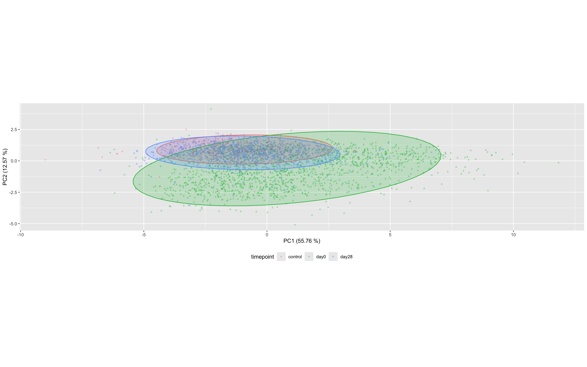
There’s some gross effects here that are pretty easy to see. The day 0 specimens are more positive in PC1 and more negative in PC2 than the other two groups. The day 28 specimens look identical to controls. This fits with what we saw in individual marker analysis earlier.
It is hard to interpret this in the context of various markers without understanding which variables contributed to the observed variance in the PCA. A loadings plot is really useful for this. We can get the Loadings from the prcomp object.
df.pca %>%
tidy(matrix = "rotation") %>%
filter(PC=="1" | PC=="2") %>%
ggplot(aes(column,value)) +
geom_bar(stat="identity")+
facet_grid(PC~.)+
coord_flip()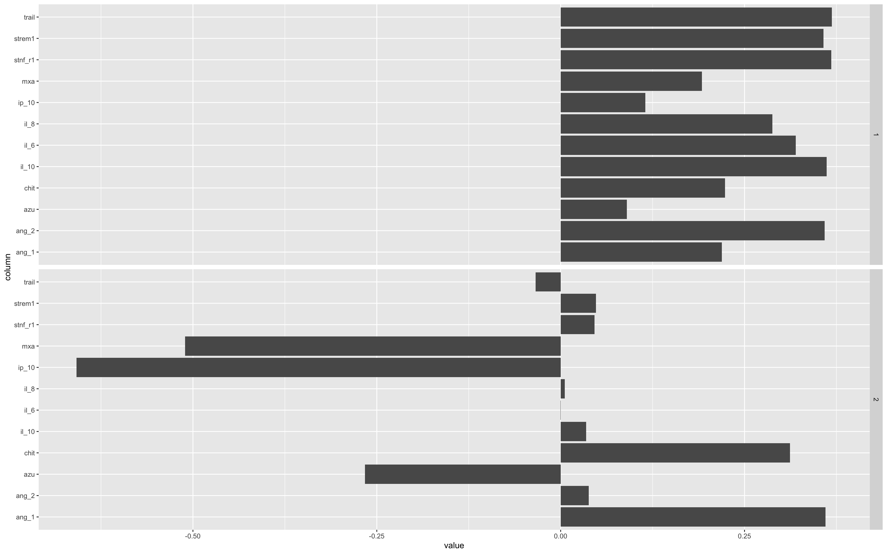
The loadings plot seems to show that basically all the markers are explaining variation in PC1. A simple interpretation here is that an immune response across the whole profile is the single biggest variation between controls, day 0 and day 28 specimens. Meanwhile there’s more nuance in PC2, where Azu, IP-10 and Mxa associate with movement in the negative direction, whilst Ang-1 and Chit associate with movement in the positive direction. Notable also is that those five markers which associate most with PC2 are the least informative with respect to PC1. This is exactly what we expect with PCA, which is essentially a kind of nth dimensional spatial analysis, where movement in one direction is somewhat counter to movement in another direction.
19 Example Analysis 6 : Identifying clusters via Principal Components Analysis : Outcomes
In some circumstances, you might want to look at more specific questions, like “how well does PC1 diagnose bad outcomes?”. For a simple diagnostic like this, we might want to drop the control group so that we are only looking at bad vs good outcomes. We’ll create a new df which just includes these outcomes, then run the PCA.
set.seed(888)
d<-full_data %>%
pivot_wider(id_cols = c(test.id,timepoint),names_from = assay, values_from = Estimate.norm) %>%
left_join(.,select(full_data,sample,test.id,cf_5_inpatient_outcome)) %>%
distinct() %>%
filter(
timepoint == "day0",
!is.na(ang_1),
!is.na(cf_5_inpatient_outcome)
) %>%
mutate(
outcome = as.factor(case_when(
cf_5_inpatient_outcome == "died" ~ "Bad",
cf_5_inpatient_outcome == "discharged_pallative" ~ "Bad",
cf_5_inpatient_outcome == "discharged" ~ "Good"
)),
outcome = relevel(as.factor(outcome), ref="Good")
) %>%
filter(!is.na(outcome))
df.pca<-prcomp(select(d,il_8:chit),scale. = T)
df.pca.summary<-summary(df.pca)
df.pca.summaryImportance of components:
PC1 PC2 PC3 PC4 PC5 PC6 PC7
Standard deviation 2.6575 1.1813 1.04338 0.81799 0.78088 0.64429 0.5299
Proportion of Variance 0.5885 0.1163 0.09072 0.05576 0.05081 0.03459 0.0234
Cumulative Proportion 0.5885 0.7048 0.79552 0.85128 0.90210 0.93669 0.9601
PC8 PC9 PC10 PC11 PC12
Standard deviation 0.48301 0.29251 0.25392 0.22645 0.21043
Proportion of Variance 0.01944 0.00713 0.00537 0.00427 0.00369
Cumulative Proportion 0.97953 0.98666 0.99204 0.99631 1.00000Then save the importance data to an object and show the scree plots
df.importance<-tibble(pc = 1:length(df.pca.summary$importance[1,]),
standard.deviation = df.pca.summary$importance[1,],
prop.of.variance = df.pca.summary$importance[2,],
cumulative.variance = df.pca.summary$importance[3,]
)
ggplot(df.importance,aes(pc,prop.of.variance))+geom_bar(stat="identity") +
ggplot(df.importance,aes(pc,cumulative.variance))+geom_bar(stat="identity")
It looks like most of the variance is explained by the first principal component.
d<- bind_cols(d,as.data.frame(df.pca$x))We can use linear regression to explore this in terms of the outcomes.
summary(
glm(data = d,formula = outcome ~ PC1+PC2+PC3+PC4+PC5+PC6+PC7+PC8+PC9+PC10+PC11+PC12,family = "binomial")
)
Call:
glm(formula = outcome ~ PC1 + PC2 + PC3 + PC4 + PC5 + PC6 + PC7 +
PC8 + PC9 + PC10 + PC11 + PC12, family = "binomial", data = d)
Coefficients:
Estimate Std. Error z value Pr(>|z|)
(Intercept) -2.698675 0.163441 -16.512 < 2e-16 ***
PC1 0.081807 0.053149 1.539 0.123761
PC2 0.122197 0.116907 1.045 0.295908
PC3 -0.006795 0.108802 -0.062 0.950202
PC4 0.274704 0.156756 1.752 0.079700 .
PC5 -0.618653 0.183398 -3.373 0.000743 ***
PC6 0.036631 0.197055 0.186 0.852530
PC7 -0.544967 0.246411 -2.212 0.026993 *
PC8 -0.731695 0.248660 -2.943 0.003255 **
PC9 -0.389617 0.441692 -0.882 0.377723
PC10 -1.449233 0.512330 -2.829 0.004674 **
PC11 -0.508922 0.554347 -0.918 0.358589
PC12 1.557524 0.654692 2.379 0.017359 *
---
Signif. codes: 0 '***' 0.001 '**' 0.01 '*' 0.05 '.' 0.1 ' ' 1
(Dispersion parameter for binomial family taken to be 1)
Null deviance: 452.60 on 781 degrees of freedom
Residual deviance: 398.44 on 769 degrees of freedom
AIC: 424.44
Number of Fisher Scoring iterations: 6Here we can see that several PCs are associated with differences between groups in terms of the timepoint.
19.0.0.1 Side note on prediction using regression models.
If you had a big data set with lots of rows, you could split the data, generate a model like this and then test its performance on new data using predict. In the example here, we feed the training data back in as a pseudo-new data set. This returns a probability of being a ‘bad’ outcome.
d$predicted <- predict(object = glm(data = d,formula = outcome ~ PC1+PC2+PC3+PC4+PC5+PC6+PC7+PC8+PC9+PC10+PC11+PC12,family = "binomial"),newdata=d,type = "response")
(select(d,cf_5_inpatient_outcome,predicted))# A tibble: 782 × 2
cf_5_inpatient_outcome predicted
<chr> <dbl>
1 discharged 0.0469
2 discharged 0.0980
3 discharged 0.154
4 discharged 0.0618
5 discharged 0.0454
6 discharged 0.0109
7 discharged 0.0270
8 discharged 0.0426
9 discharged 0.0966
10 discharged_pallative 0.195
# ℹ 772 more rowsA simple view of how well the model performs as a predictor can be seen here
ggplot(d,aes(outcome,predicted))+
geom_boxplot()+
geom_jitter(width = 0.3,height =0.01,size=0.4,alpha=0.5)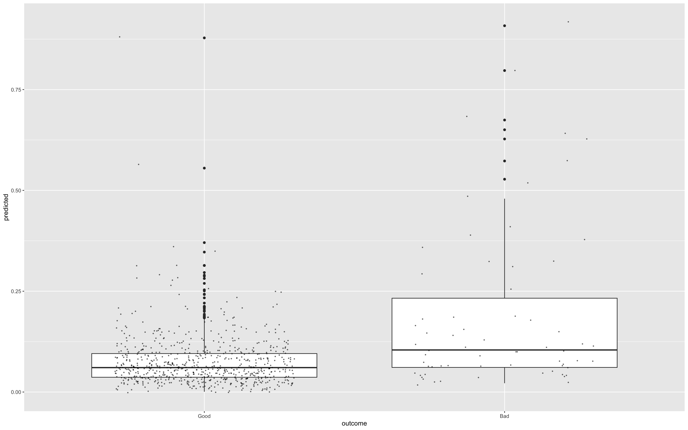
It isn’t great. Probably because of the small number of bad events. However there is still evidence that this is unlikely to be a valuable diagnostic in this context
ggplot(filter(b,timepoint=="day0",!is.na(cf_5_inpatient_outcome),cf_5_inpatient_outcome!="other_health_facility"),aes(PC1,PC2,color=cf_5_inpatient_outcome,label=sample,pch=cf_5_inpatient_outcome))+
geom_point(alpha=0.4,size=1) +
stat_ellipse(geom="polygon", aes(fill = cf_5_inpatient_outcome), alpha = 0.2, show.legend = FALSE, level = 0.95)+
xlab(label = str_c("PC1 (",round(100*df.importance$prop.of.variance[1],2)," %)",sep = ""))+
ylab(label = str_c("PC2 (",round(100*df.importance$prop.of.variance[2],2)," %)",sep = ""))+
theme(aspect.ratio=df.importance$prop.of.variance[2]/df.importance$prop.of.variance[1],
legend.position = "bottom"
)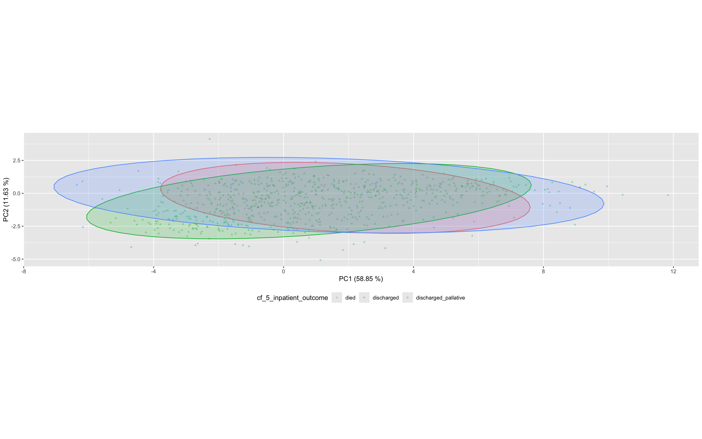
Because we didn’t have a test/train split in our data and because our dataset is quite small with relatively few bad outcomes, we won’t go any further with this, but do emphasise that this approach can be fruitful.
19.0.1 ROC analysis with PCs
You could also apply a ROC curve analysis to support your investigation. Let’s get the AUC values for each PC.
kable(
tibble(ROC=c(
str_c("PC1 : ",round(rocit(score=d$PC1,class=d$outcome)$AUC,2)),
str_c("PC2 : ",round(rocit(score=d$PC2,class=d$outcome)$AUC,2)),
str_c("PC3 : ",round(rocit(score=d$PC3,class=d$outcome)$AUC,2)),
str_c("PC4 : ",round(rocit(score=d$PC4,class=d$outcome)$AUC,2)),
str_c("PC5 : ",round(rocit(score=d$PC5,class=d$outcome)$AUC,2)),
str_c("PC6 : ",round(rocit(score=d$PC6,class=d$outcome)$AUC,2)),
str_c("PC7 : ",round(rocit(score=d$PC7,class=d$outcome)$AUC,2)),
str_c("PC8 : ",round(rocit(score=d$PC8,class=d$outcome)$AUC,2)),
str_c("PC9 : ",round(rocit(score=d$PC9,class=d$outcome)$AUC,2)),
str_c("PC10 : ",round(rocit(score=d$PC10,class=d$outcome)$AUC,2)),
str_c("PC11 : ",round(rocit(score=d$PC11,class=d$outcome)$AUC,2)),
str_c("PC12 : ",round(rocit(score=d$PC12,class=d$outcome)$AUC,2))
)
)
)| ROC |
|---|
| PC1 : 0.57 |
| PC2 : 0.54 |
| PC3 : 0.51 |
| PC4 : 0.53 |
| PC5 : 0.39 |
| PC6 : 0.51 |
| PC7 : 0.42 |
| PC8 : 0.41 |
| PC9 : 0.47 |
| PC10 : 0.48 |
| PC11 : 0.45 |
| PC12 : 0.56 |
We don’t have any AUC values that are less than 0.5, but if you did, you would need to reverse them. Remember that PCA is rotational, so you get this kind of effect. We fix it simply by reversing the sign on a marker’s scores
kable(
tibble(ROC=c(
str_c("PC2 : ",round(rocit(score=d$PC11,class=d$outcome)$AUC,2)),
str_c("PC2 (reversed) : ",round(rocit(score=-d$PC11,class=d$outcome)$AUC,2))
)))| ROC |
|---|
| PC2 : 0.45 |
| PC2 (reversed) : 0.55 |
Looking at the shape of the curve is also important.
ROCit_plot(rocit(score=d$PC1,class=d$outcome))+ggtitle("PC1")+
ROCit_plot(rocit(score=d$PC2,class=d$outcome))+ggtitle("PC2")+
ROCit_plot(rocit(score=-d$PC3,class=d$outcome))+ggtitle("PC3")+
ROCit_plot(rocit(score=d$PC4,class=d$outcome))+ggtitle("PC4")+
ROCit_plot(rocit(score=-d$PC5,class=d$outcome))+ggtitle("PC5")+
ROCit_plot(rocit(score=d$PC6,class=d$outcome))+ggtitle("PC6")+
ROCit_plot(rocit(score=-d$PC7,class=d$outcome))+ggtitle("PC7")+
ROCit_plot(rocit(score=-d$PC8,class=d$outcome))+ggtitle("PC8")+
ROCit_plot(rocit(score=d$PC9,class=d$outcome))+ggtitle("PC9")+
ROCit_plot(rocit(score=-d$PC10,class=d$outcome))+ggtitle("PC10")+
ROCit_plot(rocit(score=-d$PC11,class=d$outcome))+ggtitle("PC11")+
ROCit_plot(rocit(score=d$PC12,class=d$outcome))+ggtitle("PC12")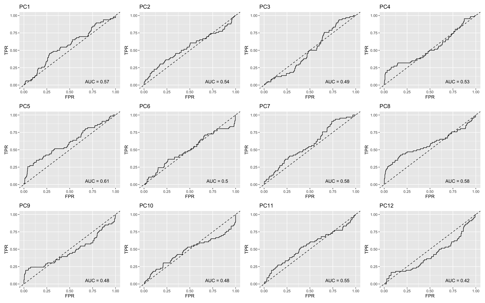
None of these look amazing, but PC1 is probably the best of the bunch. Refer back to earlier where we showed that PC1 is essentially a marker for whether you’re having a significant immune response featuring lots of cytokines.
ggplot(d,aes(PC1,fill=outcome,label=sample))+
geom_density(alpha=0.4,size=1) +
xlab(label = str_c("PC1 (",round(100*df.importance$prop.of.variance[7],2)," %)",sep = ""))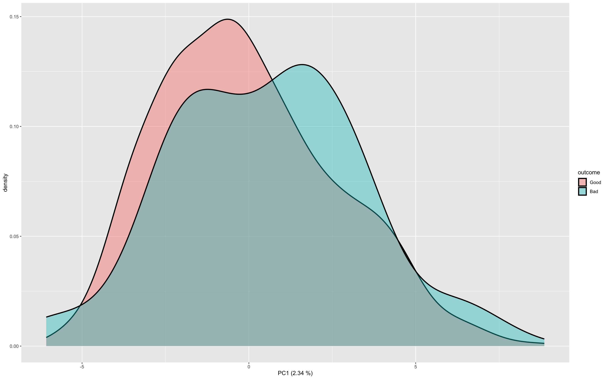
20 Summary
Based on the evidence here, there’s no way to accurately prognosticate the clinical outcome on the basis of these markers, either individually or according to multi-marker expression profiles. This is not surprising given the small number of bad outcomes in the data and given the heterogeneous disease backgrounds of the samples.
This document provides functions and should have taught you how to
Process Luminex plates in a coherent and tidy manner
Calibrate standard curves
Normalise variation between plates
Analyse data using ROC, Expectation Maximisation, Regression and Principal Components Analysis
Draw various visualisations of data using ggplot functions.
21 Acknowledgements
The Specimens used in this analysis were collected as part of the Febrile Illness Evaluation in a Broad Range of Endemicity (FIEBRE) study (https://pubmed.ncbi.nlm.nih.gov/32699131/). Clinical work and specimen collection took place at the Institute of Research and Education Development, University of Health Sciences, Ministry of Health, Vientiane, Lao People’s Democratic Republic.
The Febrile Illness Evaluation in a Broad Range of Endemicities study is funded by UK Aid from the UK government; the views expressed, however, do not necessarily reflect the UK government’s official policies. Biomarker analysis is funded by GHLabs (https://www.ghlabs.org/).
The EM code was slightly modified from https://dozenoaks.twelvetreeslab.co.uk/2019/06/mixture-models.